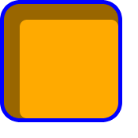

1. Introduction
This subsection is not normative.
When elements are rendered according to the CSS box model [CSS-BOX-3], each element is either not displayed at all, or formatted as one or more rectangular boxes. Each box has a rectangular content area, a band of padding around the content, a border around the padding, and a margin outside the border. (The margin may actually be negative, but margins have no influence on the background and border.)

The properties of this module deal with the decoration of the border area and with the background of the content, padding, and border areas. Additionally the box may be given a “drop-shadow” effect with the box-shadow property.
If an element is broken into multiple box fragments, box-decoration-break [CSS-BREAK-3] defines how the borders and background are divided over the various fragments. (An element can result in more than one fragment if it is broken at the end of a line, at the end of a column or at the end of a page; and continued in the next line, column or page.)
The relative stacking order of backgrounds, borders, and shadows is given in this module. For how these layers interact with other rendered content, see Appendix E “Elaborate description of Stacking Contexts” in [CSS2].
1.1. Module Interactions
This module replaces and extends the background and border features defined in [CSS2] sections 8.5 and 14.2.
All properties in this module apply to the ::first-letter pseudo-element. The background properties and border-radius properties also apply to the ::first-line pseudo-element. The UA may (but is not required to) apply the border-image or box-shadow properties to ::first-line. The UA must not apply the border-color/style/width properties to ::first-line. [CSS2]
1.2. Value Definitions
This specification follows the CSS property definition conventions from [CSS2] using the value definition syntax from [CSS-VALUES-3]. Value types not defined in this specification are defined in CSS Values & Units [CSS-VALUES-3]. Combination with other CSS modules may expand the definitions of these value types. For example, combining with CSS Images allows for using CSS gradients as background-image or border-image values. [CSS-IMAGES-3]
In addition to the property-specific values listed in their definitions, all properties defined in this specification also accept the CSS-wide keywords as their property value. For readability they have not been repeated explicitly.
2. Backgrounds
Each box has a background layer that may be fully transparent (the default), or filled with a color and/or one or more images. The background properties specify what color (background-color) and images (background-image) to use, and how they are sized, positioned, tiled, etc.
The background properties are not inherited, but the parent box’s background will shine through by default because of the initial transparent value on background-color.
2.1. Layering Multiple Background Images
The background of a box can have multiple background image layers. The number of layers is determined by the number of comma-separated values in the background-image property. Note that a value of none still creates a layer.
Tests
Each of the background images is sized, positioned, and tiled according to the corresponding value in the other background properties. The lists are matched up from the first value: excess values at the end are not used. If a property doesn’t have enough comma-separated values to match the number of layers, the UA must calculate its used value by repeating the list of values until there are enough.
background-image: url(flower.png), url(ball.png), url(grass.png); background-position: center center, 20% 80%, top left, bottom right; background-origin: border-box, content-box; background-repeat: no-repeat;
has exactly the same effect as this set, with the extra position dropped and the missing values for background-origin and background-repeat filled in (emphasized for clarity):
background-image: url(flower.png), url(ball.png), url(grass.png); background-position: center center, 20% 80%, top left; background-origin: border-box, content-box, border-box; background-repeat: no-repeat, no-repeat, no-repeat;
The first image in the list is the layer closest to the user, the next one is painted behind the first, and so on. The background color, if present, is painted below all of the other layers.
Note: The border-image properties can also define a background image, which, if present, is painted on top of the background layers created by the background properties.
2.2. Base Color: the background-color property
| Name: | background-color |
|---|---|
| Value: | <color> |
| Initial: | transparent |
| Applies to: | all elements |
| Inherited: | no |
| Percentages: | N/A |
| Computed value: | computed color |
| Canonical order: | per grammar |
| Animation type: | by computed value |
Tests
- background-color-animation-backdrop-infinite-duration-crash.html (live test) (source)
- background-color-animation-element-not-visible-at-current-viewport.html (live test) (source)
- background-color-animation-fallback-additive-keyframe.html (live test) (source)
- background-color-animation-fallback-missing-0-percent.html (live test) (source)
- background-color-animation-fallback-missing-100-percent.html (live test) (source)
- background-color-animation-fallback-replace.html (live test) (source)
- background-color-animation-field-crash.html (live test) (source)
- background-color-animation-fragmented.html (live test) (source)
- background-color-animation-half-opaque.html (live test) (source)
- background-color-animation-in-body.html (live test) (source)
- background-color-animation-non-empty-no-draw-crash.html (live test) (source)
- background-color-animation-non-zero-size-element-change-to-zero.html (live test) (source)
- background-color-animation-pseudo-element.html (live test) (source)
- background-color-animation-removed-element-crash.html (live test) (source)
- background-color-animation-single-keyframe.html (live test) (source)
- background-color-animation-three-keyframes1.html (live test) (source)
- background-color-animation-three-keyframes2.html (live test) (source)
- background-color-animation-three-keyframes3.html (live test) (source)
- background-color-animation-will-change-contents.html (live test) (source)
- background-color-animation-with-blur.html (live test) (source)
- background-color-animation-with-images.html (live test) (source)
- background-color-animation-with-mask.html (live test) (source)
- background-color-animation-with-table1.html (live test) (source)
- background-color-animation-with-table2.html (live test) (source)
- background-color-animation-with-table3.html (live test) (source)
- background-color-animation-with-table4.html (live test) (source)
- background-color-animation-with-zero-playbackRate.html (live test) (source)
- background-color-animation-zero-size-element-change-to-non-zero.html (live test) (source)
- background-color-animation-zero-size-element.html (live test) (source)
- background-color-animation.html (live test) (source)
- background-color-interpolation.html (live test) (source)
- background-color-scroll-into-viewport.html (live test) (source)
- background-color-transition-colormix.html (live test) (source)
- background-color-transition-currentcolor.html (live test) (source)
- background-color-transition.html (live test) (source)
- background-color-transparent-animation-in-body.html (live test) (source)
- background-color-animation-with-zero-alpha.html (live test) (source)
- background-color-transition-obscured.html (live test) (source)
- background-color-transition-with-delay.html (live test) (source)
- background-color-transition-with-initially-transparent.html (live test) (source)
- two-background-color-animation-diff-length1.html (live test) (source)
- two-background-color-animation-diff-length2.html (live test) (source)
- two-background-color-animation-diff-length3.html (live test) (source)
- background-none-none-and-color.html (live test) (source)
- background-color-body-propagation-001.html (live test) (source)
- background-color-body-propagation-002.html (live test) (source)
- background-color-body-propagation-003.html (live test) (source)
- background-color-body-propagation-004.html (live test) (source)
- background-color-body-propagation-005.html (live test) (source)
- background-color-body-propagation-006.html (live test) (source)
- background-color-body-propagation-007.html (live test) (source)
- background-color-body-propagation-008.html (live test) (source)
- background-color-body-propagation-009.html (live test) (source)
- background-color-clip.html (live test) (source)
- background-color-root-propagation-001.html (live test) (source)
- background-color-root-propagation-002.html (live test) (source)
- bg-color-with-gradient.html (live test) (source)
- child-move-reveals-parent-background.html (live test) (source)
- color-mix-currentcolor-background-repaint-parent.html (live test) (source)
- color-mix-currentcolor-background-repaint.html (live test) (source)
- simple-bg-color.html (live test) (source)
- inheritance.sub.html (live test) (source)
- inline-background-rtl-001.html (live test) (source)
- background-color-computed.html (live test) (source)
- background-color-invalid.html (live test) (source)
- background-color-valid.html (live test) (source)
- color-behind-images.htm (visual test) (source)
This property sets the background color of a box. This color is drawn behind any background images.
The background color is clipped according to the background-clip value associated with the bottom-most background image layer.
2.3. Image Sources: the background-image property
| Name: | background-image |
|---|---|
| Value: | <bg-image># |
| Initial: | none |
| Applies to: | all elements |
| Inherited: | no |
| Percentages: | N/A |
| Computed value: | list, each item either an <image> or the keyword none |
| Canonical order: | per grammar |
| Animation type: | discrete |
Tests
- background-image-001.html (live test) (source)
- background-image-002.html (live test) (source)
- background-image-003.html (live test) (source)
- background-image-004.html (live test) (source)
- background-image-005.html (live test) (source)
- background-image-006.html (live test) (source)
- background-image-007.html (live test) (source)
- background-image-centered-with-border-radius.html (live test) (source)
- background-image-centered.html (live test) (source)
- background-image-cors-no-reload.html (live test) (source)
- background-image-cover-zoomed-1.html (live test) (source)
- background-image-first-letter.html (live test) (source)
- background-image-first-line.html (live test) (source)
- background-image-gradient-currentcolor-conic-repaint.html (live test) (source)
- background-image-gradient-currentcolor-linear-repaint.html (live test) (source)
- background-image-gradient-currentcolor-radial-repaint.html (live test) (source)
- background-image-gradient-currentcolor-visited.html (live test) (source)
- background-image-gradient-interpolation-repaint.html (live test) (source)
- background-image-large-with-auto.html (live test) (source)
- background-image-none-gradient-repaint.html (live test) (source)
- background-image-shared-stylesheet.html (live test) (source)
- background-image-table-cells-straddling-no-repeat.html (live test) (source)
- background-image-table-cells-zoomed.html (live test) (source)
- background-image-with-border-radius-fidelity.html (live test) (source)
- background-image-interpolation.html (live test) (source)
- inheritance.sub.html (live test) (source)
- background-image-computed.sub.html (live test) (source)
- background-image-invalid.html (live test) (source)
- background-image-valid.html (live test) (source)
This property specifies the background image(s) of an element. Images are drawn with the first specified one on top (closest to the user) and each subsequent image behind the previous one. The property’s value is given as a comma-separated list of <bg-image> values where
<bg-image> = <image> | none
A value of none counts as a background image layer but draws nothing. An image that is empty (zero width or zero height), that fails to download, or that cannot be displayed (e.g., because it is not in a supported image format) likewise counts as a layer but draws nothing.
See § 2.1 Layering Multiple Background Images for how background-image interacts with other comma-separated background properties to form each background image layer.
When setting a background image, authors should also specify a background-color that will preserve contrast with the text for when the image is unavailable.
For accessibility reasons, authors should not use background images as the sole method of conveying important information. See Web Content Accessibility Guideline F3 [WCAG20]. Images are not accessible in non-graphical presentations, and background images specifically might be turned off in high-contrast display modes.
Note: Stylistic foreground images can be provided in CSS with the content property. Semantically-important foreground images should be provided in the document markup, e.g. with the <img> tag in HTML.
Note: Media fragments can be used to display a portion of an image. The CSS Images module will provide fallback syntax for image formats and include additional controls for image display.
html { background-image: url("marble.svg") }
p { background-image: none }
div { background-image: url(tl.png), url(tr.png) }
main { background-image: radial-gradient(at bottom right, transparent, white); }
Implementations may optimize by not downloading and drawing images that are not visible (e.g., because they are behind other, fully opaque images).
2.4. Tiling Images: the background-repeat property
| Name: | background-repeat |
|---|---|
| Value: | <repeat-style># |
| Initial: | repeat |
| Applies to: | all elements |
| Inherited: | no |
| Percentages: | N/A |
| Computed value: | list, each item a pair of keywords, one per dimension |
| Canonical order: | per grammar |
| Animation type: | discrete |
Tests
- discrete-no-interpolation.html (live test) (source)
- background-repeat-round-1a.html (live test) (source)
- background-repeat-round-1b.html (live test) (source)
- background-repeat-round-1c.html (live test) (source)
- background-repeat-round-1d.html (live test) (source)
- background-repeat-round-1e.html (live test) (source)
- background-repeat-round-2.html (live test) (source)
- background-repeat-round-3.html (live test) (source)
- background-repeat-round-4.html (live test) (source)
- background-repeat-space-10.html (live test) (source)
- background-repeat-space-1a.html (live test) (source)
- background-repeat-space-1b.html (live test) (source)
- background-repeat-space-1c.html (live test) (source)
- background-repeat-space-2.html (live test) (source)
- background-repeat-space-3.html (live test) (source)
- background-repeat-space-4.html (live test) (source)
- background-repeat-space-5.html (live test) (source)
- background-repeat-space-6.html (live test) (source)
- background-repeat-space-7.html (live test) (source)
- background-repeat-space-8.html (live test) (source)
- background-repeat-space-9.html (live test) (source)
- background-repeat-no-repeat.xht (live test) (source)
- background-repeat-repeat-x.xht (live test) (source)
- background-repeat-repeat-y.xht (live test) (source)
- background-repeat-round-roundup.xht (live test) (source)
- background-repeat-round.xht (live test) (source)
- background-repeat-space.xht (live test) (source)
- gradient-repeat-spaced-with-borders.html (live test) (source)
- inheritance.sub.html (live test) (source)
- background-repeat-computed.html (live test) (source)
- background-repeat-invalid.html (live test) (source)
- background-repeat-valid.html (live test) (source)
- subpixel-repeat-no-repeat-mix.html (live test) (source)
This property specifies how background images are tiled after they have been sized and positioned. The property’s value is given as a comma-separated list of <repeat-style> values where
<repeat-style> = repeat-x | repeat-y | [repeat | space | round | no-repeat]{1,2}
Single values for <repeat-style> have the following meanings:
- repeat-x
- Computes to repeat no-repeat.
- repeat-y
- Computes to no-repeat repeat.
- repeat
- Computes to repeat repeat.
- space
- Computes to space space
- round
- Computes to round round
- no-repeat
- Computes to no-repeat no-repeat
If a <repeat-style> value has two keywords, the first one applies to the horizontal axis, the second to the vertical one, as follows:
- repeat
- The image is repeated in this direction as often as needed to cover the background painting area.
- space
- The image is repeated as often as will fit within the background positioning area without being clipped, and then the images are spaced out to fill the area. The first and last images touch the edges of the area. If the background painting area is larger than the background positioning area, then the pattern repeats to fill the background painting area. The value of background-position for this direction is ignored unless there is not enough space for two copies of the image in this axis, in which case only one image is placed, and background-position determines its position in this axis.
- round
- The image is repeated as often as will fit within the background positioning area. If it doesn’t fit a whole number of times, it is rescaled so that it does. See the formula under background-size. If the background painting area is larger than the background positioning area, then the pattern repeats to fill the background painting area.
- no-repeat
- The image is placed once and not repeated in this direction.
Unless one of the two keywords is no-repeat, the whole background painting area will be tiled, i.e., not just one vertical strip and one horizontal strip.
body {
background: white url("pendant.png");
background-repeat: repeat-y;
background-position: center;
}

body {
background-image: url(dot.png) white;
background-repeat: space
}

See § 2.1 Layering Multiple Background Images for how background-repeat interacts with other comma-separated background properties to form each background image layer.
2.5. Affixing Images: the background-attachment property
| Name: | background-attachment |
|---|---|
| Value: | <attachment># |
| Initial: | scroll |
| Applies to: | all elements |
| Inherited: | no |
| Percentages: | N/A |
| Computed value: | list, each item the keyword as specified |
| Canonical order: | per grammar |
| Animation type: | discrete |
Tests
- discrete-no-interpolation.html (live test) (source)
- background-attachment-350.html (live test) (source)
- background-attachment-353.html (live test) (source)
- background-attachment-fixed-block-002.html (live test) (source)
- background-attachment-fixed-border-radius-offset.html (live test) (source)
- background-attachment-fixed-inline-002.html (live test) (source)
- background-attachment-fixed-inline-scrolled.html (live test) (source)
- background-attachment-fixed-inside-transform-1.html (live test) (source)
- background-attachment-local-block-002.html (live test) (source)
- background-attachment-local-hidden.html (live test) (source)
- attachment-local-clipping-color-1.html (live test) (source)
- attachment-local-clipping-color-2.html (live test) (source)
- attachment-local-clipping-color-3.html (live test) (source)
- attachment-local-clipping-color-4.html (live test) (source)
- attachment-local-clipping-color-5.html (live test) (source)
- attachment-local-clipping-color-6.html (live test) (source)
- attachment-local-clipping-image-1.html (live test) (source)
- attachment-local-clipping-image-2.html (live test) (source)
- attachment-local-clipping-image-3.html (live test) (source)
- attachment-local-clipping-image-4.html (live test) (source)
- attachment-local-clipping-image-5.html (live test) (source)
- attachment-local-clipping-image-6.html (live test) (source)
- attachment-local-positioning-2.html (live test) (source)
- attachment-local-positioning-3.html (live test) (source)
- attachment-local-positioning-4.html (live test) (source)
- attachment-local-positioning-5.html (live test) (source)
- attachment-scroll-positioning-1.html (live test) (source)
- background-attachment-margin-root-001.html (live test) (source)
- background-attachment-margin-root-002.html (live test) (source)
- inheritance.sub.html (live test) (source)
- local-attachment-content-box-scroll.html (live test) (source)
- background-attachment-computed.html (live test) (source)
- background-attachment-invalid.html (live test) (source)
- background-attachment-valid.html (live test) (source)
If background images are specified, this property specifies whether they are fixed with regard to the viewport (fixed) or scroll along with the box (scroll) or its contents (local). The property’s value is given as a comma-separated list of <attachment> keywords where
<attachment> = scroll | fixed | local
- fixed
-
The background is fixed with regard to the viewport.
In paged media where there is no viewport,
a fixed background is fixed with respect to
the page box
and therefore replicated on every page.
Note: There is only one viewport per view. Even if an box is a scroll container, a fixed background doesn’t move with the box.
- local
- The background is fixed with regard to the box’s contents: if the box has a scrolling mechanism, the background scrolls with the box’s contents, and the background painting area and background positioning area are relative to the scrollable overflow area of the box rather than to the border framing them. Because the scrollable overflow area does not include the border area, for scroll containers the border-box value of background-clip may be treated the same as padding-box.
- scroll
- The background is fixed with regard to the box itself and does not scroll with its contents. (It is effectively attached to the box’s border.)
Even if the image is fixed, it is still only visible when it is in the background painting area of the box or otherwise unclipped. (See § 2.11 Backgrounds of Special Elements for the cases when background images are not clipped.) Thus, unless the image is tiled, it may be invisible.
body {
background: red url("pendant.gif");
background-repeat: repeat-y;
background-attachment: fixed;
}
Note: User agents that do not support fixed backgrounds (for example due to limitations of the hardware platform) will ignore declarations with the keyword fixed. For example:
body {
/* For all UAs: */
background: white url(paper.png) scroll;
/* For UAs that do fixed backgrounds: */
background: white url(ledger.png) fixed;
}
h1 {
/* For all UAs: */
background: silver;
/* For UAs that do fixed backgrounds: */
background: url(stripe.png) fixed, white url(ledger.png) fixed;
}
See § 2.1 Layering Multiple Background Images for how background-attachment interacts with other comma-separated background properties to form each background image layer.
2.6. Positioning Images: the background-position property
| Name: | background-position |
|---|---|
| Value: | <bg-position># |
| Initial: | 0% 0% |
| Applies to: | all elements |
| Inherited: | no |
| Percentages: | refer to size of background positioning area minus size of background image; see text |
| Computed value: | list, each item a pair of offsets (horizontal and vertical) from the top left origin each given as a computed <length-percentage> value |
| Canonical order: | per grammar |
| Animation type: | repeatable list |
Tests
- background-position-interpolation.html (live test) (source)
- background-position-x-interpolation.html (live test) (source)
- background-position-y-interpolation.html (live test) (source)
- background-position-calc-minmax-001.html (live test) (source)
- background-position-negative-percentage-comparison-002.html (live test) (source)
- background-position-negative-percentage-comparison.html (live test) (source)
- background-position-three-four-values.html (live test) (source)
- background-position-xy-three-four-values-passthru.html (live test) (source)
- background-position-bottom-right-repeat-round.html (live test) (source)
- background-position-right-in-body.html (live test) (source)
- inheritance.sub.html (live test) (source)
- background-position-computed.html (live test) (source)
- background-position-invalid.html (live test) (source)
- background-position-valid.html (live test) (source)
- background-position-x-computed.html (live test) (source)
- background-position-x-invalid.html (live test) (source)
- background-position-x-valid.html (live test) (source)
- background-position-y-computed.html (live test) (source)
- background-position-y-invalid.html (live test) (source)
- background-position-y-valid.html (live test) (source)
If background images have been specified, this property specifies their initial position (after any resizing) within their corresponding background positioning area.
The property’s value is given as a comma-separated list of <bg-position> values where
<bg-position> = [ [ left | center | right | top | bottom | <length-percentage> ] | [ left | center | right | <length-percentage> ] [ top | center | bottom | <length-percentage> ] | [ center | [ left | right ] <length-percentage>? ] && [ center | [ top | bottom ] <length-percentage>? ] ]
If only one value is specified, the second value is assumed to be center. If two values are given, a <length-percentage> as the first value represents the horizontal position (or offset) and a <length-percentage> as the second value represents the vertical position (or offset). The <length-percentage> values here represent an offset of the top left corner of the background image from the top left corner of the background positioning area.
Note: A pair of keywords can be reordered, while a combination of keyword and length or percentage cannot. So center left is valid while 50% left is not.
If three or four values are given, then each <length-percentage> represents an offset and must be preceded by a keyword, which specifies from which edge the offset is given. For example, background-position: bottom 10px right 20px represents a 10px vertical offset up from the bottom edge and a 20px horizontal offset leftward from the right edge. If three values are given, the missing offset is assumed to be zero.
Positive values represent an offset inward from the edge of the background positioning area. Negative values represent an offset outward from the edge of the background positioning area.
background-position: left 10px top 15px; /* 10px, 15px */ background-position: left top ; /* 0px, 0px */ background-position: 10px 15px; /* 10px, 15px */ background-position: left 15px; /* 0px, 15px */ background-position: 10px top ; /* 10px, 0px */ background-position: left top 15px; /* 0px, 15px */ background-position: left 10px top ; /* 10px, 0px */
- <percentage>
-
A percentage for the horizontal offset is relative to
(width of background positioning area - width of background image).
A percentage for the vertical offset is relative to
(height of background positioning area - height of background image),
where the size of the image is the size given by background-size.
For example, with a value pair of 0% 0%, the upper left corner of the image is aligned with the upper left corner of, usually, the box’s padding edge. A value pair of 100% 100% places the lower right corner of the image in the lower right corner of the area. With a value pair of 75% 50%, the point 75% across and 50% down the image is to be placed at the point 75% across and 50% down the area.

Diagram of the meaning of background-position: 75% 50%. - <length>
- A length value gives a fixed length as the offset. For example, with a value pair of 2cm 1cm, the upper left corner of the image is placed 2cm to the right and 1cm below the upper left corner of the background positioning area.
- top
- Computes to 0% for the vertical position if one or two values are given, otherwise specifies the top edge as the origin for the next offset.
- right
- Computes to 100% for the horizontal position if one or two values are given, otherwise specifies the right edge as the origin for the next offset.
- bottom
- Computes to 100% for the vertical position if one or two values are given, otherwise specifies the bottom edge as the origin for the next offset.
- left
- Computes to 0% for the horizontal position if one or two values are given, otherwise specifies the left edge as the origin for the next offset.
- center
- Computes to 50% (left 50%) for the horizontal position if the horizontal position is not otherwise specified, or 50% (top 50%) for the vertical position if it is.
body { background: url("banner.jpeg") right top } /* 100% 0% */
body { background: url("banner.jpeg") top center } /* 50% 0% */
body { background: url("banner.jpeg") center } /* 50% 50% */
body { background: url("banner.jpeg") bottom } /* 50% 100% */
body {
background-image: url("logo.png");
background-attachment: fixed;
background-position: 100% 100%;
background-repeat: no-repeat;
}
background-position: right 3em bottom 10px
See § 2.1 Layering Multiple Background Images for how background-position interacts with other comma-separated background properties to form each background image layer.
2.6.1. Serialization of background-position values
The specified value and computed value of the <bg-position> type serialize exactly as defined in [CSS-VALUES-4] for <position>. For 3-value productions (which are not valid in <position>), the specified value serialization is identical to the equivalent 4-value syntax except that the omitted offset remains omitted.
2.7. Painting Area: the background-clip property
| Name: | background-clip |
|---|---|
| Value: | <visual-box># |
| Initial: | border-box |
| Applies to: | all elements |
| Inherited: | no |
| Percentages: | N/A |
| Computed value: | list, each item a keyword as specified |
| Canonical order: | per grammar |
| Animation type: | repeatable list |
Tests
- discrete-no-interpolation.html (live test) (source)
- background-clip-001.html (live test) (source)
- background-clip-002.html (live test) (source)
- background-clip-003.html (live test) (source)
- background-clip-004.html (live test) (source)
- background-clip-005.html (live test) (source)
- background-clip-006.html (live test) (source)
- background-clip-007.html (live test) (source)
- background-clip-008.html (live test) (source)
- background-clip-009.html (live test) (source)
- background-clip-010.html (live test) (source)
- background-clip-color-repaint.html (live test) (source)
- background-clip-color.html (live test) (source)
- background-clip-content-box-001.html (live test) (source)
- background-clip-content-box-002.html (live test) (source)
- background-clip-padding-box-001.html (live test) (source)
- background-clip-padding-box-with-border-radius.html (live test) (source)
- clip-rounded-corner.html (live test) (source)
- clip-text-animated-text.html (live test) (source)
- clip-text-dynamic-2.html (live test) (source)
- clip-text-flex.html (live test) (source)
- clip-text-multi-line.html (live test) (source)
- background-clip_padding-box.html (live test) (source)
- background-paint-order-001.html (live test) (source)
- background-rounded-image-clip-001.html (live test) (source)
- background-rounded-image-clip-002.html (live test) (source)
- css3-background-clip-border-box.html (live test) (source)
- css3-background-clip-content-box.html (live test) (source)
- css3-background-clip-padding-box.html (live test) (source)
- css3-background-clip.html (live test) (source)
- inheritance.sub.html (live test) (source)
- local-attachment-content-box-scroll.html (live test) (source)
- background-clip-computed.html (live test) (source)
- background-clip-invalid.html (live test) (source)
- background-clip-valid.html (live test) (source)
Determines the background painting area, which determines the area within which the background is painted. Values have the following meanings:
- border-box
- The background is painted within (clipped to) the border box.
- padding-box
- The background is painted within (clipped to) the padding box.
- content-box
- The background is painted within (clipped to) the content box.
Note: The root element has a different background painting area and thus the background-clip property has no effect when specified on it. See § 2.11 Backgrounds of Special Elements.
Note: The background is always drawn behind the border, if any. See “Elaborate description of Stacking Contexts” in [CSS2] Appendix E.
See § 4.2 Corner Shaping for how border-radius affects the shape of the background painting area.
See § 2.1 Layering Multiple Background Images for how background-clip interacts with other comma-separated background properties to form each background image layer.
2.8. Positioning Area: the background-origin property
| Name: | background-origin |
|---|---|
| Value: | <visual-box># |
| Initial: | padding-box |
| Applies to: | all elements |
| Inherited: | no |
| Percentages: | N/A |
| Computed value: | list, each item a keyword as specified |
| Canonical order: | per grammar |
| Animation type: | repeatable list |
Tests
- discrete-no-interpolation.html (live test) (source)
- background-position-origin-interpolation.html (live test) (source)
- background-gradient-subpixel-fills-area.html (live test) (source)
- background-origin-001.html (live test) (source)
- background-origin-002.html (live test) (source)
- background-origin-003.html (live test) (source)
- background-origin-004.html (live test) (source)
- background-origin-005.html (live test) (source)
- background-origin-006.html (live test) (source)
- background-origin-007.html (live test) (source)
- background-origin-008.html (live test) (source)
- origin-border-box.html (live test) (source)
- origin-border-box_with_position.html (live test) (source)
- origin-border-box_with_radius.html (live test) (source)
- origin-border-box_with_size.html (live test) (source)
- origin-content-box.html (live test) (source)
- origin-content-box_with_position.html (live test) (source)
- origin-content-box_with_radius.html (live test) (source)
- origin-content-box_with_size.html (live test) (source)
- origin-padding-box.html (live test) (source)
- origin-padding-box_with_position.html (live test) (source)
- origin-padding-box_with_radius.html (live test) (source)
- origin-padding-box_with_size.html (live test) (source)
- css3-background-origin-border-box.html (live test) (source)
- css3-background-origin-content-box.html (live test) (source)
- css3-background-origin-padding-box.html (live test) (source)
- inheritance.sub.html (live test) (source)
- background-origin-computed.html (live test) (source)
- background-origin-invalid.html (live test) (source)
- background-origin-valid.html (live test) (source)
This property determines the background positioning area: the area within which any background images are positioned. For elements rendered as multiple box fragments (e.g., inline boxes on several lines, boxes on several pages), specifies which boxes box-decoration-break [CSS-BREAK-3] operates on to determine the background positioning area(s).
- padding-box
- The position is relative to the padding box. (For single boxes 0 0 is the upper left corner of the padding edge, 100% 100% is the lower right corner.)
- border-box
- The position is relative to the border box.
- content-box
- The position is relative to the content box.
If the background-attachment value for this layer is fixed, then this property has no effect: in this case the background positioning area is the initial containing block.
Note: If background-clip is padding-box, background-origin is border-box, background-position is top left (the initial value), and the element has a non-zero border, then the top and left edges of the background image will be clipped.
See § 2.1 Layering Multiple Background Images for how background-origin interacts with other comma-separated background properties to form each background image layer.
2.9. Sizing Images: the background-size property
| Name: | background-size |
|---|---|
| Value: | <bg-size># |
| Initial: | auto |
| Applies to: | all elements |
| Inherited: | no |
| Percentages: | see text |
| Computed value: | list, each item a pair of sizes (one per axis) each represented as either a keyword or a computed <length-percentage> value |
| Canonical order: | per grammar |
| Animation type: | repeatable list |
Tests
- background-size-interpolation.html (live test) (source)
- background-size-001.html (live test) (source)
- background-size-002.html (live test) (source)
- background-size-005.html (live test) (source)
- background-size-006.html (live test) (source)
- background-size-007.html (live test) (source)
- background-size-008.html (live test) (source)
- background-size-009.html (live test) (source)
- background-size-010.html (live test) (source)
- background-size-011.html (live test) (source)
- background-size-012.html (live test) (source)
- background-size-013.html (live test) (source)
- background-size-014.html (live test) (source)
- background-size-015.html (live test) (source)
- background-size-016.html (live test) (source)
- background-size-017.html (live test) (source)
- background-size-018.html (live test) (source)
- background-size-019.html (live test) (source)
- background-size-020.html (live test) (source)
- background-size-021.html (live test) (source)
- background-size-025.html (live test) (source)
- background-size-026.html (live test) (source)
- background-size-027.html (live test) (source)
- background-size-028.html (live test) (source)
- background-size-029.html (live test) (source)
- background-size-030.html (live test) (source)
- background-size-031.html (live test) (source)
- background-size-034.html (live test) (source)
- background-size-041.html (live test) (source)
- background-size-042.html (live test) (source)
- background-size-043.html (live test) (source)
- background-size-044.html (live test) (source)
- background-size-contain-001.html (live test) (source)
- background-size-contain-002.html (live test) (source)
- background-size-cover-001.html (live test) (source)
- background-size-cover-002.html (live test) (source)
- background-size-cover-003.html (live test) (source)
- background-size-one-value-1x1-image.html (live test) (source)
- background-size-percentage-root.html (live test) (source)
- background-size-with-negative-value.html (live test) (source)
- background-size-contain-svg-view.html (live test) (source)
- background-size-contain.xht (live test) (source)
- background-size-cover-contain-001.xht (live test) (source)
- background-size-cover-contain-002.xht (live test) (source)
- background-size-cover-svg-view.html (live test) (source)
- background-size-cover-svg.html (live test) (source)
- background-size-cover.xht (live test) (source)
- background-size-near-zero-color.html (live test) (source)
- background-size-near-zero-gradient.html (live test) (source)
- background-size-near-zero-png.html (live test) (source)
- background-size-near-zero-svg.html (live test) (source)
- background-size-vector-001.html (live test) (source)
- background-size-vector-002.html (live test) (source)
- background-size-vector-003.html (live test) (source)
- background-size-vector-004.html (live test) (source)
- background-size-vector-005.html (live test) (source)
- background-size-vector-006.html (live test) (source)
- background-size-vector-007.html (live test) (source)
- background-size-vector-008.html (live test) (source)
- background-size-vector-009.html (live test) (source)
- background-size-vector-010.html (live test) (source)
- background-size-vector-011.html (live test) (source)
- background-size-vector-012.html (live test) (source)
- background-size-vector-013.html (live test) (source)
- background-size-vector-014.html (live test) (source)
- background-size-vector-015.html (live test) (source)
- background-size-vector-016.html (live test) (source)
- background-size-vector-017.html (live test) (source)
- background-size-vector-018.html (live test) (source)
- background-size-vector-019.html (live test) (source)
- background-size-vector-020.html (live test) (source)
- background-size-vector-021.html (live test) (source)
- background-size-vector-022.html (live test) (source)
- background-size-vector-023.html (live test) (source)
- background-size-vector-024.html (live test) (source)
- background-size-vector-025.html (live test) (source)
- background-size-vector-026.html (live test) (source)
- background-size-vector-027.html (live test) (source)
- background-size-vector-028.html (live test) (source)
- background-size-vector-029.html (live test) (source)
- diagonal-percentage-vector-background.html (live test) (source)
- tall--auto--omitted-width-percent-height.html (live test) (source)
- tall--auto--percent-width-nonpercent-height-viewbox.html (live test) (source)
- tall--auto--percent-width-nonpercent-height.html (live test) (source)
- tall--auto--percent-width-omitted-height-viewbox.html (live test) (source)
- tall--auto--percent-width-omitted-height.html (live test) (source)
- tall--auto--percent-width-percent-height-viewbox.html (live test) (source)
- tall--auto--percent-width-percent-height.html (live test) (source)
- tall--auto-32px--nonpercent-width-nonpercent-height-viewbox.html (live test) (source)
- tall--auto-32px--nonpercent-width-nonpercent-height.html (live test) (source)
- tall--auto-32px--nonpercent-width-omitted-height-viewbox.html (live test) (source)
- tall--auto-32px--nonpercent-width-omitted-height.html (live test) (source)
- tall--auto-32px--nonpercent-width-percent-height-viewbox.html (live test) (source)
- tall--auto-32px--nonpercent-width-percent-height.html (live test) (source)
- tall--auto-32px--omitted-width-nonpercent-height-viewbox.html (live test) (source)
- tall--auto-32px--omitted-width-nonpercent-height.html (live test) (source)
- tall--auto-32px--omitted-width-omitted-height-viewbox.html (live test) (source)
- tall--auto-32px--omitted-width-omitted-height.html (live test) (source)
- tall--auto-32px--omitted-width-percent-height-viewbox.html (live test) (source)
- tall--auto-32px--omitted-width-percent-height.html (live test) (source)
- tall--auto-32px--percent-width-nonpercent-height-viewbox.html (live test) (source)
- tall--auto-32px--percent-width-nonpercent-height.html (live test) (source)
- tall--auto-32px--percent-width-omitted-height-viewbox.html (live test) (source)
- tall--auto-32px--percent-width-omitted-height.html (live test) (source)
- tall--auto-32px--percent-width-percent-height-viewbox.html (live test) (source)
- tall--auto-32px--percent-width-percent-height.html (live test) (source)
- tall--contain--height.html (live test) (source)
- tall--contain--nonpercent-width-nonpercent-height-viewbox.html (live test) (source)
- tall--contain--nonpercent-width-nonpercent-height.html (live test) (source)
- tall--contain--nonpercent-width-omitted-height-viewbox.html (live test) (source)
- tall--contain--nonpercent-width-omitted-height.html (live test) (source)
- tall--contain--nonpercent-width-percent-height-viewbox.html (live test) (source)
- tall--contain--nonpercent-width-percent-height.html (live test) (source)
- tall--contain--omitted-width-nonpercent-height-viewbox.html (live test) (source)
- tall--contain--omitted-width-nonpercent-height.html (live test) (source)
- tall--contain--omitted-width-omitted-height-viewbox.html (live test) (source)
- tall--contain--omitted-width-omitted-height.html (live test) (source)
- tall--contain--omitted-width-percent-height-viewbox.html (live test) (source)
- tall--contain--omitted-width-percent-height.html (live test) (source)
- tall--contain--percent-width-nonpercent-height-viewbox.html (live test) (source)
- tall--contain--percent-width-nonpercent-height.html (live test) (source)
- tall--contain--percent-width-omitted-height-viewbox.html (live test) (source)
- tall--contain--percent-width-omitted-height.html (live test) (source)
- tall--contain--percent-width-percent-height-viewbox.html (live test) (source)
- tall--contain--percent-width-percent-height.html (live test) (source)
- tall--contain--width.html (live test) (source)
- tall--cover--height.html (live test) (source)
- tall--cover--nonpercent-width-nonpercent-height--crisp.html (live test) (source)
- tall--cover--nonpercent-width-nonpercent-height-viewbox--crisp.html (live test) (source)
- tall--cover--nonpercent-width-nonpercent-height-viewbox.html (live test) (source)
- tall--cover--nonpercent-width-nonpercent-height.html (live test) (source)
- tall--cover--nonpercent-width-omitted-height-viewbox.html (live test) (source)
- tall--cover--nonpercent-width-omitted-height.html (live test) (source)
- tall--cover--nonpercent-width-percent-height-viewbox.html (live test) (source)
- tall--cover--nonpercent-width-percent-height.html (live test) (source)
- tall--cover--omitted-width-nonpercent-height-viewbox.html (live test) (source)
- tall--cover--omitted-width-nonpercent-height.html (live test) (source)
- tall--cover--omitted-width-omitted-height-viewbox.html (live test) (source)
- tall--cover--omitted-width-omitted-height.html (live test) (source)
- tall--cover--omitted-width-percent-height-viewbox.html (live test) (source)
- tall--cover--omitted-width-percent-height.html (live test) (source)
- tall--cover--percent-width-nonpercent-height-viewbox.html (live test) (source)
- tall--cover--percent-width-nonpercent-height.html (live test) (source)
- tall--cover--percent-width-omitted-height-viewbox.html (live test) (source)
- tall--cover--percent-width-omitted-height.html (live test) (source)
- tall--cover--percent-width-percent-height-viewbox.html (live test) (source)
- tall--cover--percent-width-percent-height.html (live test) (source)
- tall--cover--width.html (live test) (source)
- wide--12px-auto--nonpercent-width-nonpercent-height-viewbox.html (live test) (source)
- wide--12px-auto--nonpercent-width-nonpercent-height.html (live test) (source)
- wide--12px-auto--nonpercent-width-omitted-height-viewbox.html (live test) (source)
- wide--12px-auto--nonpercent-width-omitted-height.html (live test) (source)
- wide--12px-auto--nonpercent-width-percent-height-viewbox.html (live test) (source)
- wide--12px-auto--nonpercent-width-percent-height.html (live test) (source)
- wide--12px-auto--omitted-width-nonpercent-height-viewbox.html (live test) (source)
- wide--12px-auto--omitted-width-nonpercent-height.html (live test) (source)
- wide--12px-auto--omitted-width-omitted-height-viewbox.html (live test) (source)
- wide--12px-auto--omitted-width-omitted-height.html (live test) (source)
- wide--12px-auto--omitted-width-percent-height-viewbox.html (live test) (source)
- wide--12px-auto--omitted-width-percent-height.html (live test) (source)
- wide--12px-auto--percent-width-nonpercent-height-viewbox.html (live test) (source)
- wide--12px-auto--percent-width-nonpercent-height.html (live test) (source)
- wide--12px-auto--percent-width-omitted-height-viewbox.html (live test) (source)
- wide--12px-auto--percent-width-omitted-height.html (live test) (source)
- wide--12px-auto--percent-width-percent-height-viewbox.html (live test) (source)
- wide--12px-auto--percent-width-percent-height.html (live test) (source)
- wide--auto--nonpercent-width-nonpercent-height-viewbox.html (live test) (source)
- wide--auto--nonpercent-width-nonpercent-height.html (live test) (source)
- wide--auto--nonpercent-width-omitted-height-viewbox.html (live test) (source)
- wide--auto--nonpercent-width-omitted-height.html (live test) (source)
- wide--auto--nonpercent-width-percent-height-viewbox.html (live test) (source)
- wide--auto--nonpercent-width-percent-height.html (live test) (source)
- wide--auto--omitted-width-nonpercent-height-viewbox.html (live test) (source)
- wide--auto--omitted-width-nonpercent-height.html (live test) (source)
- wide--auto--omitted-width-omitted-height-viewbox.html (live test) (source)
- wide--auto--omitted-width-omitted-height.html (live test) (source)
- wide--auto--omitted-width-percent-height-viewbox.html (live test) (source)
- wide--auto--omitted-width-percent-height.html (live test) (source)
- wide--auto--percent-width-nonpercent-height-viewbox.html (live test) (source)
- wide--auto--percent-width-nonpercent-height.html (live test) (source)
- wide--auto--percent-width-omitted-height-viewbox.html (live test) (source)
- wide--auto--percent-width-omitted-height.html (live test) (source)
- wide--auto--percent-width-percent-height-viewbox.html (live test) (source)
- wide--auto--percent-width-percent-height.html (live test) (source)
- wide--auto-32px--nonpercent-width-nonpercent-height-viewbox.html (live test) (source)
- wide--auto-32px--nonpercent-width-nonpercent-height.html (live test) (source)
- wide--auto-32px--nonpercent-width-omitted-height-viewbox.html (live test) (source)
- wide--auto-32px--nonpercent-width-omitted-height.html (live test) (source)
- wide--auto-32px--nonpercent-width-percent-height-viewbox.html (live test) (source)
- wide--auto-32px--nonpercent-width-percent-height.html (live test) (source)
- wide--auto-32px--omitted-width-nonpercent-height-viewbox.html (live test) (source)
- wide--auto-32px--omitted-width-nonpercent-height.html (live test) (source)
- wide--auto-32px--omitted-width-omitted-height-viewbox.html (live test) (source)
- wide--auto-32px--omitted-width-omitted-height.html (live test) (source)
- wide--auto-32px--omitted-width-percent-height-viewbox.html (live test) (source)
- wide--auto-32px--omitted-width-percent-height.html (live test) (source)
- wide--auto-32px--percent-width-nonpercent-height-viewbox.html (live test) (source)
- wide--auto-32px--percent-width-nonpercent-height.html (live test) (source)
- wide--auto-32px--percent-width-omitted-height-viewbox.html (live test) (source)
- wide--auto-32px--percent-width-omitted-height.html (live test) (source)
- wide--auto-32px--percent-width-percent-height-viewbox.html (live test) (source)
- wide--auto-32px--percent-width-percent-height.html (live test) (source)
- wide--contain--height.html (live test) (source)
- wide--contain--nonpercent-width-nonpercent-height-viewbox.html (live test) (source)
- wide--contain--nonpercent-width-nonpercent-height.html (live test) (source)
- wide--contain--nonpercent-width-omitted-height-viewbox.html (live test) (source)
- wide--contain--nonpercent-width-omitted-height.html (live test) (source)
- wide--contain--nonpercent-width-percent-height-viewbox.html (live test) (source)
- wide--contain--nonpercent-width-percent-height.html (live test) (source)
- wide--contain--omitted-width-nonpercent-height-viewbox.html (live test) (source)
- wide--contain--omitted-width-nonpercent-height.html (live test) (source)
- wide--contain--omitted-width-omitted-height-viewbox.html (live test) (source)
- wide--contain--omitted-width-omitted-height.html (live test) (source)
- wide--contain--omitted-width-percent-height-viewbox.html (live test) (source)
- wide--contain--omitted-width-percent-height.html (live test) (source)
- wide--contain--percent-width-nonpercent-height-viewbox.html (live test) (source)
- wide--contain--percent-width-nonpercent-height.html (live test) (source)
- wide--contain--percent-width-omitted-height-viewbox.html (live test) (source)
- wide--contain--percent-width-omitted-height.html (live test) (source)
- wide--contain--percent-width-percent-height-viewbox.html (live test) (source)
- wide--contain--percent-width-percent-height.html (live test) (source)
- wide--contain--width.html (live test) (source)
- wide--cover--height.html (live test) (source)
- wide--cover--nonpercent-width-nonpercent-height-viewbox.html (live test) (source)
- wide--cover--nonpercent-width-nonpercent-height.html (live test) (source)
- wide--cover--nonpercent-width-omitted-height-viewbox.html (live test) (source)
- wide--cover--nonpercent-width-omitted-height.html (live test) (source)
- wide--cover--nonpercent-width-percent-height-viewbox.html (live test) (source)
- wide--cover--nonpercent-width-percent-height.html (live test) (source)
- wide--cover--omitted-width-nonpercent-height-viewbox.html (live test) (source)
- wide--cover--omitted-width-nonpercent-height.html (live test) (source)
- wide--cover--omitted-width-omitted-height-viewbox.html (live test) (source)
- wide--cover--omitted-width-omitted-height.html (live test) (source)
- wide--cover--omitted-width-percent-height-viewbox.html (live test) (source)
- wide--cover--omitted-width-percent-height.html (live test) (source)
- wide--cover--percent-width-nonpercent-height-viewbox.html (live test) (source)
- wide--cover--percent-width-nonpercent-height.html (live test) (source)
- wide--cover--percent-width-omitted-height-viewbox.html (live test) (source)
- wide--cover--percent-width-omitted-height.html (live test) (source)
- wide--cover--percent-width-percent-height-viewbox.html (live test) (source)
- wide--cover--percent-width-percent-height.html (live test) (source)
- wide--cover--width.html (live test) (source)
- zero-height-ratio-5px-auto.html (live test) (source)
- zero-height-ratio-auto-5px.html (live test) (source)
- zero-height-ratio-auto-auto.html (live test) (source)
- zero-height-ratio-contain.html (live test) (source)
- zero-height-ratio-cover.html (live test) (source)
- zero-ratio-no-dimensions-5px-auto.html (live test) (source)
- zero-ratio-no-dimensions-auto-5px.html (live test) (source)
- zero-ratio-no-dimensions-auto-auto.html (live test) (source)
- zero-ratio-no-dimensions-contain.html (live test) (source)
- zero-ratio-no-dimensions-cover.html (live test) (source)
- zero-width-ratio-5px-auto.html (live test) (source)
- zero-width-ratio-auto-5px.html (live test) (source)
- zero-width-ratio-auto-auto.html (live test) (source)
- zero-width-ratio-contain.html (live test) (source)
- zero-width-ratio-cover.html (live test) (source)
- css3-background-size-001.html (live test) (source)
- css3-background-size-contain.html (live test) (source)
- css3-background-size.html (live test) (source)
- inheritance.sub.html (live test) (source)
- subpixel-repeat-no-repeat-mix.html (live test) (source)
- background-size-computed.html (live test) (source)
- background-size-invalid.html (live test) (source)
- background-size-valid.html (live test) (source)
This property specifies the size of each background image. The property’s value is given as a comma-separated list of <bg-size> values where
<bg-size> = [ <length-percentage [0,∞]> | auto ]{1,2} | cover | contain
Values have the following meanings:
- contain
- Scale the image, while preserving its natural aspect ratio (if any), to the largest size such that both its width and its height can fit inside the background positioning area.
- cover
- Scale the image, while preserving its natural aspect ratio (if any), to the smallest size such that both its width and its height can completely cover the background positioning area.
- [ <length-percentage [0,∞]> | auto ]{1,2}
-
The first value gives the width of the corresponding image,
the second value its height.
If only one value is given
the second is assumed to be auto.
A <percentage> is relative to the background positioning area.
An auto value for one dimension is resolved by using the image’s natural aspect ratio and the size of the other dimension, or failing that, using the image’s natural size, or failing that, treating it as 100%.
If both values are auto then the natural width and/or height of the image should be used, if any, the missing dimension (if any) behaving as auto as described above. If the image has neither natural size, its size is determined as for contain.
Negative values are invalid.
div {
background-image: url(plasma.png);
background-repeat: no-repeat;
background-size: 100% 100%;
background-origin: content-box }
The second example stretches the image so that exactly two copies fit horizontally. The aspect ratio is preserved:
p {
background-image: url(tubes.png);
background-size: 50% auto;
background-origin: border-box }
This example forces the background image to be 15 by 15 pixels:
p {
background-size: 15px 15px;
background-image: url(tile.png)}
This example uses the image’s natural size. Note that this is the only possible behavior in CSS level 1 and 2.
body {
background-size: auto; /* default */
background-image: url(flower.png) }
The following example rounds the height of the image to 33.3%, up from the specified value of 30%. At 30%, three images would fit entirely and a fourth only partially. After rounding, three images fit exactly. The width of the image is 20% of the background positioning area width and is not rounded.
p {
background-image: url(chain.png);
background-repeat: no-repeat round;
background-size: 20% 30% }
If background-repeat is round for one (or both) dimensions, there is a second step. The UA must scale the image in that dimension (or both dimensions) so that it fits a whole number of times in the background positioning area. In the case of the width (height is analogous):
If X ≠ 0 is the width of the image after step one and W is the width of the background positioning area, then the rounded width X' = W / round(W / X) where round() is a function that returns the nearest natural number (integer greater than zero).
If background-repeat is round for one dimension only and if background-size is auto for the other dimension, then there is a third step: that other dimension is scaled so that the original aspect ratio is restored.
div {
background-image: url(image1.png);
background-repeat: repeat; /* default */
background-size: auto } /* default */
In the following example, the background is shown with a width of 3em and its height is scaled proportionally to keep the original aspect ratio:
div {
background-image: url(image2.png);
background-repeat: repeat; /* default */
background-size: 3em } /* = '3em auto' */
In the following example, the background is shown with a width of approximately 3em: scaled so that it fits a whole number of times in the width of the background. The height is scaled proportionally to keep the original aspect ratio:
div {
background-image: url(image3.png);
background-repeat: round repeat;
background-size: 3em auto }
In the following example, the background image is shown with a width of 3em and a height that is either the height corresponding to that width at the original aspect ratio or slightly less:
div {
background-image: url(image4.png);
background-repeat: repeat round;
background-size: 3em auto }
In the following example, the background image is shown with a height of approximately 4em: scaled slightly so that it fits a whole number of times in the background height. The width is the approximately the width that corresponds to a 4em height at the original aspect ratio: scaled slightly so that it fits a whole number of times in the background width.
div {
background-image: url(image5.png);
background-repeat: round;
background-size: auto 4em }
If the background image’s width or height resolves to zero, this causes the image not to be displayed. (The effect is the same as if it had been a transparent image.)
See § 2.1 Layering Multiple Background Images for how background-size interacts with other comma-separated background properties to form each background image layer.
2.10. Backgrounds Shorthand: the background property
| Name: | background |
|---|---|
| Value: | <bg-layer>#? , <final-bg-layer> |
| Initial: | see individual properties |
| Applies to: | all elements |
| Inherited: | no |
| Percentages: | see individual properties |
| Computed value: | see individual properties |
| Canonical order: | per grammar |
| Animation type: | see individual properties |
Tests
- background-331.html (live test) (source)
- background-332.html (live test) (source)
- background-333.html (live test) (source)
- background-334.html (live test) (source)
- background-335.html (live test) (source)
- background-336.html (live test) (source)
- background-computed.html (live test) (source)
- background-invalid.html (live test) (source)
- background-shorthand-serialization.html (live test) (source)
- background-valid.html (live test) (source)
The background property is a shorthand property for setting most background properties at the same place in the style sheet. The number of comma-separated items defines the number of background image layers. Given a valid declaration, for each layer the shorthand first sets the corresponding value of each of background-image, background-position, background-size, background-repeat, background-origin, background-clip and background-attachment to that property’s initial value, then assigns any explicit values specified for this layer in the declaration. Finally background-color is set to the specified color, if any, else set to its initial value.
This property’s value is given as a comma-separated list of values where
<bg-layer> = <bg-image> || <bg-position> [ / <bg-size> ]? || <repeat-style> || <attachment> || <visual-box> || <visual-box> <final-bg-layer> = <bg-image> || <bg-position> [ / <bg-size> ]? || <repeat-style> || <attachment> || <visual-box> || <visual-box> || <'background-color'>
Note: A color is permitted in <final-bg-layer>, but not in <bg-layer>.
If one <visual-box> value is present then it sets both background-origin and background-clip to that value. If two values are present, then the first sets background-origin and the second background-clip.
body { background: red }
p { background: url("chess.png") 40% / 10em gray
round fixed border-box; }
The first rule is equivalent to:
body {
background-color: red;
background-position: 0% 0%;
background-size: auto;
background-repeat: repeat;
background-clip: border-box;
background-origin: padding-box;
background-attachment: scroll;
background-image: none }
The second is equivalent to:
p {
background-color: gray;
background-position: 40% 50%;
background-size: 10em auto;
background-repeat: round;
background-clip: border-box;
background-origin: border-box;
background-attachment: fixed;
background-image: url(chess.png) }
E { background: #CCC url("metal.jpg") top left / 100% auto no-repeat}
div { background: padding-box url(paper.jpg) white center }
div {
background-color: white;
background-image: url(paper.jpg);
background-repeat: repeat;
background-attachment: scroll;
background-position: center;
background-clip: padding-box;
background-origin: padding-box;
background-size: auto auto }
background: url(a.png) top left no-repeat,
url(b.png) center / 100% 100% no-repeat,
url(c.png) white;
is equivalent to
background-image: url(a.png), url(b.png), url(c.png); background-position: top left, center, top left; background-repeat: no-repeat, no-repeat, repeat; background-clip: border-box, border-box, border-box; background-origin: padding-box, padding-box, padding-box; background-size: auto auto, 100% 100%, auto auto; background-attachment: scroll, scroll, scroll; background-color: white;
2.11. Backgrounds of Special Elements
The document canvas is the infinite surface over which the document is rendered. [CSS2] Since no element corresponds to the canvas, in order to allow styling of the canvas CSS propagates the background of the root element (or, in the case of HTML, the <body> element) as described below. However, if the element whose background would be used for the canvas is display: none, then the canvas background is transparent.
If the canvas background is not opaque, the canvas surface below it shows through. The texture of the canvas surface is UA-dependent (but is typically an opaque white).
2.11.1. The Canvas Background and the Root Element
The background of the root element becomes the canvas background and its background painting area extends to cover the entire canvas. However, any images are sized and positioned relative to the root element’s box as if they were painted for that element alone. (In other words, the background positioning area is determined as for the root element.) The root element does not paint this background again, i.e., the used value of its background is transparent.
Tests
2.11.2. The Canvas Background and the HTML <body> Element
For documents whose root element is
an HTML HTML element
or an XHTML html element [HTML]:
if the computed value of background-image on the root element
is none and its background-color is transparent,
user agents must instead propagate
the computed values of the background properties
from that element’s first
HTML BODY or XHTML body
child element.
The used values
of that BODY element’s background properties
are their initial values,
and the propagated values are treated
as if they were specified on the root element.
It is recommended that authors of HTML documents specify the canvas background
using the BODY element
rather than the HTML element.
Note: Using containment disables
this special handling of the HTML body element.
See the CSS Containment 1 § 2 Strong Containment: the contain property for details.
<!DOCTYPE html PUBLIC '-//W3C//DTD HTML 4.0//EN'
>
<html>
<head>
<title>Setting the canvas background</title>
<style type="text/css">
body { background: url("http://example.org/marble.png") }
</style>
</head>
<body>
<p>My background is marble.</p>
</body>
</html>
2.11.3. The ::first-line Pseudo-element‘s Background
The ::first-line pseudo-element is like an inline-level element for the purposes of the background (see section 5.12.1 of [CSS2]). That means, e.g., that in a left-justified first line, the background does not necessarily extend all the way to the right edge.
3. Borders
The border can either be a predefined style (solid line, double line, dotted line, pseudo-3D border, etc.) or it can be an image. In the former case, various properties define the style (border-style), color (border-color), and thickness (border-width) of the border.
3.1. Line Colors: the border-color properties
| Name: | border-top-color, border-right-color, border-bottom-color, border-left-color |
|---|---|
| Value: | <color> |
| Initial: | currentColor |
| Applies to: | all elements except ruby base containers and ruby annotation containers |
| Inherited: | no |
| Percentages: | N/A |
| Computed value: | computed color |
| Canonical order: | per grammar |
| Animation type: | by computed value |
| Logical property group: | border-color |
| Name: | border-color |
|---|---|
| Value: | <color>{1,4} |
| Initial: | see individual properties |
| Applies to: | all elements except ruby base containers and ruby annotation containers |
| Inherited: | no |
| Percentages: | N/A |
| Computed value: | see individual properties |
| Canonical order: | per grammar |
| Animation type: | see individual properties |
Tests
- border-color-interpolation.html (live test) (source)
- border-image-displayed-with-transparent-border-color.html (live test) (source)
- color-mix-currentcolor-border-repaint-parent.html (live test) (source)
- color-mix-currentcolor-border-repaint.html (live test) (source)
- currentcolor-border-repaint-parent.html (live test) (source)
- inheritance.sub.html (live test) (source)
- border-color-computed.html (live test) (source)
- border-color-invalid.html (live test) (source)
- border-color-shorthand.html (live test) (source)
- border-color-valid.html (live test) (source)
These properties set the foreground color of the border specified by the border-style properties.
The border-color property is a shorthand property for setting border-top-color, border-right-color, border-bottom-color, and border-left-color in a single declaration.
If there is only one component value, it applies to all sides. If there are two values, the top and bottom are set to the first value and the right and left are set to the second. If there are three values, the top is set to the first value, the left and right are set to the second, and the bottom is set to the third. If there are four values they apply to the top, right, bottom, and left, respectively.
3.2. Line Patterns: the border-style properties
| Name: | border-top-style, border-right-style, border-bottom-style, border-left-style |
|---|---|
| Value: | <line-style> |
| Initial: | none |
| Applies to: | all elements except ruby base containers and ruby annotation containers |
| Inherited: | no |
| Percentages: | N/A |
| Computed value: | specified keyword |
| Canonical order: | per grammar |
| Animation type: | discrete |
| Logical property group: | border-style |
| Name: | border-style |
|---|---|
| Value: | <line-style>{1,4} |
| Initial: | see individual properties |
| Applies to: | all elements except ruby base containers and ruby annotation containers |
| Inherited: | no |
| Percentages: | N/A |
| Computed value: | see individual properties |
| Canonical order: | per grammar |
| Animation type: | see individual properties |
Tests
These properties control whether a border appears, and if it does what style it’s drawn in (if it is not overridden by a border image).
The border-style property is a shorthand property for setting border-top-style, border-right-style, border-bottom-style, and border-left-style in a single declaration.
If there is only one component value, it applies to all sides. If there are two values, the top and bottom are set to the first value and the right and left are set to the second. If there are three values, the top is set to the first value, the left and right are set to the second, and the bottom is set to the third. If there are four values they apply to the top, right, bottom, and left, respectively.
The style is specified as a <line-style> keyword, where
<line-style> = none | hidden | dotted | dashed | solid | double | groove | ridge | inset | outset
Values have the following meanings:
- none
- No border. Color and width are ignored (i.e., the border has width 0). Note this means that the initial value of border-image-width will also resolve to zero.
- hidden
- Same as none, but has different behavior in the border conflict resolution rules for border-collapsed tables [CSS2].
- dotted
- A series of round dots.
- dashed
- A series of square-ended dashes.
- solid
- A single line segment.
- double
- Two parallel solid lines with some space between them. (The thickness of the lines is not specified, but the sum of the lines and the space must equal border-width.)
- groove
- Looks as if it were carved in the canvas. (This is typically achieved by creating a “shadow” from two colors that are slightly lighter and darker than the specified border-color.)
- ridge
- Looks as if it were coming out of the canvas.
- inset
- Looks as if the content on the inside of the border is sunken into the canvas. Treated as ridge in the collapsing border model. [CSS2]
- outset
- Looks as if the content on the inside of the border is raised out of the canvas. Treated as groove in the collapsing border model. [CSS2]
Borders are drawn in front of the element’s background, but behind the element’s content (in case it overlaps).
Note: Border colors close to black or white may need different color calculations than colors in between in order to create the required “3D” effect of groove, ridge, inset, or outset.
Note: There is no control over the spacing of the dots and dashes, nor over the length of the dashes. Implementations are encouraged to choose a spacing that makes the corners symmetrical.
Note: This specification does not define how borders of different styles should be joined in the corner. Also note that rounded corners may cause the corners and the contents to overlap, if the padding is less than the radius of the corner.
3.3. Line Thickness: the border-width properties
| Name: | border-top-width, border-right-width, border-bottom-width, border-left-width |
|---|---|
| Value: | <line-width> |
| Initial: | medium |
| Applies to: | all elements except ruby base containers and ruby annotation containers |
| Inherited: | no |
| Percentages: | N/A |
| Computed value: | absolute length, snapped as a border width; zero if the border style is none or |
| Canonical order: | per grammar |
| Animation type: | by computed value |
| Logical property group: | border-width |
| Name: | border-width |
|---|---|
| Value: | <line-width>{1,4} |
| Initial: | see individual properties |
| Applies to: | all elements except ruby base containers and ruby annotation containers |
| Inherited: | no |
| Percentages: | see individual properties |
| Computed value: | see individual properties |
| Canonical order: | per grammar |
| Animation type: | see individual properties |
Tests
- border-bottom-width-composition.html (live test) (source)
- border-image-width-composition.html (live test) (source)
- border-image-width-interpolation.html (live test) (source)
- border-left-width-composition.html (live test) (source)
- border-right-width-composition.html (live test) (source)
- border-top-width-composition.html (live test) (source)
- border-width-interpolation.html (live test) (source)
- border-bottom-width-medium.html (live test) (source)
- border-bottom-width-thick.html (live test) (source)
- border-bottom-width-thin.html (live test) (source)
- border-left-width-medium.html (live test) (source)
- border-left-width-thick.html (live test) (source)
- border-left-width-thin.html (live test) (source)
- border-right-width-medium.html (live test) (source)
- border-right-width-thick.html (live test) (source)
- border-right-width-thin.html (live test) (source)
- border-top-width-medium.html (live test) (source)
- border-top-width-thick.html (live test) (source)
- border-top-width-thin.html (live test) (source)
- border-width-cssom.html (live test) (source)
- border-width-pixel-snapping-001-a.html (live test) (source)
- border-width-pixel-snapping-001-b.html (live test) (source)
- border-width-small-values-001-a.html (live test) (source)
- border-width-small-values-001-b.html (live test) (source)
- border-width-small-values-001-c.html (live test) (source)
- border-width-small-values-001-d.html (live test) (source)
- border-width-small-values-001-e.html (live test) (source)
- inheritance.sub.html (live test) (source)
- border-width-computed.html (live test) (source)
- border-width-invalid.html (live test) (source)
- border-width-shorthand.html (live test) (source)
- border-width-valid.html (live test) (source)
These properties specify the thickness of the border, i.e. the border width. Where
<line-width> = <length [0,∞]> | thin | medium | thick
Negative values are invalid. The thin, medium, and thick keywords are equivalent to 1px, 3px, and 5px, respectively.
The border-width property is a shorthand property for setting border-top-width, border-right-width, border-bottom-width, and border-left-width in a single declaration.
If there is only one component value, it applies to all sides. If there are two values, the top and bottom are set to the first value and the right and left are set to the second. If there are three values, the top is set to the first value, the left and right are set to the second, and the bottom is set to the third. If there are four values they apply to the top, right, bottom, and left, respectively.
Note: Although the initial width is medium, the initial style is none; therefore the used initial width is 0.
3.4. Border Shorthand Properties
| Name: | border-top, border-right, border-bottom, border-left |
|---|---|
| Value: | <line-width> || <line-style> || <color> |
| Initial: | See individual properties |
| Applies to: | all elements except ruby base containers and ruby annotation containers |
| Inherited: | no |
| Percentages: | N/A |
| Computed value: | see individual properties |
| Canonical order: | per grammar |
| Animation type: | see individual properties |
These shorthand properties set the border-width, border-color, and border-style of the top, right, bottom, and left borders of a box. Omitted values are set to their initial values.
| Name: | border |
|---|---|
| Value: | <line-width> || <line-style> || <color> |
| Initial: | See individual properties |
| Applies to: | all elements except ruby base containers and ruby annotation containers |
| Inherited: | no |
| Percentages: | N/A |
| Computed value: | see individual properties |
| Canonical order: | per grammar |
| Animation type: | see individual properties |
Tests
The border property is a shorthand property for setting the same border-width, border-color, and border-style for all four borders of a box. Unlike the shorthand margin and padding properties, the border property cannot set different values on the four borders. To do so, one or more of the other border properties must be used.
The border shorthand also resets border-image to its initial value. It is therefore recommended that authors use the border shorthand, rather than other shorthands or the individual properties, to override any border settings earlier in the cascade. This will ensure that border-image has also been reset to allow the new styles to take effect.
Note: The CSS Working Group intends for the border shorthand to reset all border properties in future levels of CSS as well. For example, if a border-characters property is introduced in the future to allow glyphs as borders, it will also be reset by the border shorthand. By using the border shorthand to reset borders, authors can be guaranteed a “blank canvas” no matter what properties are introduced in the future.
p { border: solid red }
p {
border-top: solid red;
border-right: solid red;
border-bottom: solid red;
border-left: solid red;
border-image: none;
}
Since, to some extent, the properties have overlapping functionality, the order in which the rules are specified is important.
blockquote {
border-color: red;
border-left: double;
color: black
}
In the above example, the color of the left border is black, while the other borders are red. This is due to border-left setting the width, style, and color. Since the color value is not given by the border-left property, it will be taken from the color property. The fact that the color property is set after the border-left property is not relevant.
4. Rounded Corners
4.1. Curve Radii: the border-radius properties
| Name: | border-top-left-radius, border-top-right-radius, border-bottom-right-radius, border-bottom-left-radius |
|---|---|
| Value: | <length-percentage [0,∞]>{1,2} |
| Initial: | 0 |
| Applies to: | all elements (but see prose) |
| Inherited: | no |
| Percentages: | Refer to corresponding dimension of the border box. |
| Computed value: | pair of computed <length-percentage> values |
| Canonical order: | per grammar |
| Animation type: | by computed value |
| Logical property group: | border-radius |
| Name: | border-radius |
|---|---|
| Value: | <length-percentage [0,∞]>{1,4} [ / <length-percentage [0,∞]>{1,4} ]? |
| Initial: | see individual properties |
| Applies to: | all elements (but see prose) |
| Inherited: | no |
| Percentages: | Refer to corresponding dimension of the border box. |
| Computed value: | see individual properties |
| Canonical order: | per grammar |
| Animation type: | see individual properties |
Tests
- border-bottom-left-radius-composition.html (live test) (source)
- border-bottom-right-radius-composition.html (live test) (source)
- border-radius-interpolation.html (live test) (source)
- border-top-left-radius-composition.html (live test) (source)
- border-top-right-radius-composition.html (live test) (source)
- border-bottom-left-radius-001.xht (live test) (source)
- border-bottom-left-radius-004.xht (live test) (source)
- border-bottom-left-radius-005.xht (live test) (source)
- border-bottom-left-radius-010.xht (live test) (source)
- border-bottom-left-radius-011.xht (live test) (source)
- border-bottom-left-radius-014.xht (live test) (source)
- border-bottom-right-radius-001.xht (live test) (source)
- border-bottom-right-radius-004.xht (live test) (source)
- border-bottom-right-radius-005.xht (live test) (source)
- border-bottom-right-radius-010.xht (live test) (source)
- border-bottom-right-radius-011.xht (live test) (source)
- border-bottom-right-radius-014.xht (live test) (source)
- border-radius-001.xht (live test) (source)
- border-radius-002.xht (live test) (source)
- border-radius-003.xht (live test) (source)
- border-radius-004.xht (live test) (source)
- border-radius-005.xht (live test) (source)
- border-radius-006.xht (live test) (source)
- border-radius-007.xht (live test) (source)
- border-radius-008.xht (live test) (source)
- border-radius-009.xht (live test) (source)
- border-radius-010.xht (live test) (source)
- border-radius-011.xht (live test) (source)
- border-radius-012.html (live test) (source)
- border-radius-013.html (live test) (source)
- border-radius-clip-001.html (live test) (source)
- border-radius-clip-002.htm (live test) (source)
- border-radius-clipping-002.html (live test) (source)
- border-radius-clipping-with-transform-001.html (live test) (source)
- border-radius-css-text.html (live test) (source)
- border-radius-dynamic-from-no-radius.html (live test) (source)
- border-radius-horizontal-value-is-zero.html (live test) (source)
- border-radius-shorthand-002.html (live test) (source)
- border-top-left-radius-001.xht (live test) (source)
- border-top-left-radius-004.xht (live test) (source)
- border-top-left-radius-005.xht (live test) (source)
- border-top-left-radius-010.xht (live test) (source)
- border-top-left-radius-011.xht (live test) (source)
- border-top-left-radius-014.xht (live test) (source)
- border-top-right-radius-001.xht (live test) (source)
- border-top-right-radius-004.xht (live test) (source)
- border-top-right-radius-005.xht (live test) (source)
- border-top-right-radius-010.xht (live test) (source)
- border-top-right-radius-011.xht (live test) (source)
- border-top-right-radius-014.xht (live test) (source)
- box-shadow-border-radius-001.html (live test) (source)
- css-border-radius-001.html (live test) (source)
- inheritance.sub.html (live test) (source)
- inner-border-non-renderable.html (live test) (source)
- border-radius-computed.html (live test) (source)
- border-radius-invalid.html (live test) (source)
- border-radius-valid.html (live test) (source)
- webkit-border-radius-valid.html (live test) (source)
The two <length-percentage> values of the border-*-radius properties define the radii of a quarter ellipse that defines the shape of the corner of the outer border edge (see the diagram below). The first value is the horizontal radius, the second the vertical radius. If the second value is omitted it is copied from the first. If either length is zero, the corner is square, not rounded. Percentages for the horizontal radius refer to the width of the border box, whereas percentages for the vertical radius refer to the height of the border box. Negative values are invalid.

DIV.standout {
width: 13em;
height: 8em;
border: solid black 1em;
border-radius: 7.5em 5em }
The border-radius shorthand sets all four border-*-radius properties. If values are given before and after the slash, then the values before the slash set the horizontal radii and the values after the slash set the vertical radii. If there is no slash, then the values set the radii in both axes equally. The four values for each radii are given in the order top-left, top-right, bottom-right, bottom-left. If bottom-left is omitted it is the same as top-right. If bottom-right is omitted it is the same as top-left. If top-right is omitted it is the same as top-left.
border-radius: 4em;
is equivalent to
border-top-left-radius: 4em; border-top-right-radius: 4em; border-bottom-right-radius: 4em; border-bottom-left-radius: 4em;
and
border-radius: 2em 1em 4em / 0.5em 3em;
is equivalent to
border-top-left-radius: 2em 0.5em; border-top-right-radius: 1em 3em; border-bottom-right-radius: 4em 0.5em; border-bottom-left-radius: 1em 3em;
4.2. Corner Shaping
The padding edge (inner border) radius is the outer border radius minus the corresponding border thickness. In the case where this results in a negative value, the inner radius is zero. (In such cases the center of the border’s inner curve might not coincide with that of its outer curve.) Likewise the content edge radius is the padding edge radius minus the corresponding padding, or if that is negative, zero. The border and padding thicknesses in the curved region are thus interpolated from the adjoining sides, and when two adjoining borders are of different thicknesses the corner will show a smooth transition between the thicker and thinner borders.
All border styles (solid, dotted, inset, etc.) follow the curve of the border.

Note: If the center of a corner’s outer curve is past an opposite padding edge (in the border area of a side opposite the corner), the inner curve will not be a full quarter ellipse.
p { width: 70px; height: 70px; border: solid 30px;
border-color: orange orange silver silver;
border-top-right-radius: 100%; }
|

|
The margin edge, being outside the border edge, calculates its radius by adding the corresponding margin thickness to each border radius, with the corresponding outset-adjusted border radius applied.
When expanding an edge that has a border radius, e.g. for computing the margin edge, box-shadow spread, or overflow-clip-margin, the different border radius values are adjusted so that a small rounded corner with a big outset does not appear to be disproportionally round.
This is done by computing the corresponding outset-adjusted border radius.
To compute the outset-adjusted border radius given the 2-dimensional sizes edge, radius, and outset:
-
Let coverage be
2 * min(radius’s width / edge’s width, radius’s height / edge’s height). -
Let adustedRadiusWidth be the adjusted radius dimension given coverage, radius’s width, and outset’s width.
-
Let adustedRadiusHeight be the adjusted radius dimension given coverage, radius’s height, and outset’s height.
-
Return (adustedRadiusWidth, adustedRadiusHeight).
To compute the adjusted radius dimension given numbers coverage, radius, and outset:
-
If radius is greater than spread, or if coverage is greater than 1, then return
radius + outset. -
Let ratio be
radius / outset. -
Return
radius + outset * (1 - (1 - ratio)3 * (1 - coverage3)).
Note: this algorithm is designed to reduce the effect of the outset (or spread) on the shape of the corner. The coverage factor makes this reduction more pronounced for rectangular shapes (where the border-radius is close to 0), and less pronounced for elliptical shapes (where the border-radius is close to 50%).
4.3. Corner Clipping
Although border images are not affected by border-radius, other effects that clip painting or event handling to the border, padding, or content edge must clip to their respective curves. For example, backgrounds clip to the curve specified by background-clip, overflow values other than visible to the curved padding edge (when overflow on both axes is not visible), replaced element content to the curved content edge, pointer events to the curved border edge, etc.
Note: As border-radius reduces the interactive area of an element authors should make sure the remaining interactive area conforms to recommended minima for the platforms they target; in particular, conforming to recommended minimum touch target sizes may require larger widths and heights when border-radius is used.
DIV {
background: black;
color: white;
border-radius: 1em;
padding: 1em }
4.4. Color and Style Transitions
Color and style transitions must be contained within the segment of the border that intersects the smallest rectangle that contains both border radii as well as the center of the inner curve (which may be a point representing the corner of the padding edge, if the border radii are smaller than the border width).
If one of these borders is zero-width, then the other border takes up the entire transitional area. Otherwise, the center of color and style transitions between adjoining borders is a point along the curve that is a continuous monotonic function of the ratio of the border widths. However it is not defined what these transitions look like or what function maps from this ratio to a point on the curve.

4.5. Overlapping Curves
Corner curves must not overlap: When the sum of any two adjacent border radii exceeds the size of the border box, UAs must proportionally reduce the used values of all border radii until none of them overlap. The algorithm for reducing radii is as follows:
Let f = min(Li/Si), where i ∈ {top, right, bottom, left}, Si is the sum of the two corresponding radii of the corners on side i, and Ltop = Lbottom = the width of the box, and Lleft = Lright = the height of the box. If f < 1, then all corner radii are reduced by multiplying them by f.
Note: This formula ensures that quarter circles remain quarter circles and large radii remain larger than smaller ones, but it may reduce corners that were already small enough, which may make borders of nearby elements that should look the same look different.
If the curve interferes with UI elements such as scrollbars, the UA may further reduce the used value of the affected border radii (and only the affected border radii) as much as necessary, but no more.
box-sizing: border-box; width: 6em; height: 2.5em; border-radius: 0.5em 2em 0.5em 2em
The height (2.5em) is enough for the specified radii (0.5em plus 2.0em). However, if the height is only 2em,
box-sizing: border-box; width: 6em; height: 2em; border-radius: 0.5em 2em 0.5em 2em
all corners need to be reduced by a factor 0.8 to make them fit. The used border radii thus are 0.4em (instead of 0.5em) and 1.6em (instead of 2em). See borders B in the figure.
![[image: rectangle with two tiny rounded corners and two very large ones, on opposite corners]](images/corner-large-mix.png)
4.6. Effect on Tables
The border-radius properties do apply to table, inline-table, and table-cell boxes in separated borders mode (border-collapse: separate). When border-collapse is collapse, they have no effect.
Tests
5. Border Images
Authors can specify an image to be used in place of the border styles. In this case, the border’s design is taken from the sides and corners of an image specified with border-image-source, whose pieces may be sliced, scaled, and stretched in various ways to fit the size of the border image area. The border-image properties do not affect layout: layout of the box, its content, and surrounding content is based on the border-width and border-style properties only.

The image is 81 by 81 pixels and has to be divided into 9 equal parts. The style rules could thus be as follows:
DIV {
border: double orange 1em;
border-image: url("border.png") 27 round stretch;
}
The result, when applied to a DIV of 12 by 5em, will be similar to this:


The rest of the border properties then interact to lay out the tiles as follows:
![Diagram: The image-less (fallback) rendering
has a green double border.
The rendering with border-image shows the wavy green border,
ith the waves getting longer as they reach the corners.
The corner tiles render as 124px-wide squares
and the side tiles repeat a whole number of times
to fill the space in between.
Because of the gradual corner effects,
the tiles extend deep into the padding area.
The whole border image effect is outset 31px,
so that the troughs of the waves align
just outside the padding edge.](images/border-image.png)
Here, even though the border-width is 12px, the border-image-width property computes to 124px. The border image area is then outset 31px from the border box and into the margin area. If the border-image fails to load (or if border images are not supported by the UA), the fallback rendering uses a green double border.
.notebox {
border: double orange;
/* must set 'border' shorthand first, otherwise it erases 'border-image' */
border-image: url("border.png") 30 round;
/* but other 'border' properties can be set after */
border-width: thin thick;
}
...
.sidebar .notebox {
box-shadow: 0 0 5px gray;
border-radius: 5px;
border: none; /* turn off all borders */
/* 'border' shorthand resets 'border-image' */
}
5.1. Image Source: the border-image-source property
| Name: | border-image-source |
|---|---|
| Value: | none | <image> |
| Initial: | none |
| Applies to: | All elements, except internal table elements when border-collapse is collapse |
| Inherited: | no |
| Percentages: | N/A |
| Computed value: | the keyword none or the computed <image> |
| Canonical order: | per grammar |
| Animation type: | discrete |
Tests
Specifies an image to use as a border in place of the rendering specified by the border-style properties and, if given the fill keyword in border-image-slice, as an additional image backdrop for the element. If the value is none or if the image cannot be displayed (or the property doesn’t apply), the border styles will be used; otherwise the element’s border-style borders are not drawn and this border image is drawn as described in the sections below.
5.2. Image Slicing: the border-image-slice property
| Name: | border-image-slice |
|---|---|
| Value: | [<number [0,∞]> | <percentage [0,∞]>]{1,4} && fill? |
| Initial: | 100% |
| Applies to: | All elements, except internal table elements when border-collapse is collapse |
| Inherited: | no |
| Percentages: | refer to size of the border image |
| Computed value: | four values, each either a number or percentage; plus a fill keyword if specified |
| Canonical order: | per grammar |
| Animation type: | by computed value |
Tests
- border-image-slice-composition.html (live test) (source)
- border-image-slice-interpolation-stability.html (live test) (source)
- border-image-slice-interpolation.html (live test) (source)
- border-image-slice-001.xht (live test) (source)
- border-image-slice-002.xht (live test) (source)
- border-image-slice-003.xht (live test) (source)
- border-image-slice-004.htm (live test) (source)
- border-image-slice-005.htm (live test) (source)
- border-image-slice-006.htm (live test) (source)
- border-image-slice-007.htm (live test) (source)
- border-image-slice-fill-001.html (live test) (source)
- border-image-slice-fill-002.html (live test) (source)
- border-image-slice-fill-003.html (live test) (source)
- border-image-slice-percentage.html (live test) (source)
- border-image-slice-shorthand-reset.html (live test) (source)
- border-image-slice-computed.html (live test) (source)
- border-image-slice-invalid.html (live test) (source)
- border-image-slice-valid.html (live test) (source)
This property specifies inward offsets from the top, right, bottom, and left edges of the image, dividing it into nine regions: four corners, four edges and a middle. The middle image part is discarded (treated as fully transparent) unless the fill keyword is present. (It is drawn over the background; see Drawing the Border Image.)
If there is only one component value, it applies to all sides. If there are two values, the top and bottom are set to the first value and the right and left are set to the second. If there are three values, the top is set to the first value, the left and right are set to the second, and the bottom is set to the third. If there are four values they apply to the top, right, bottom, and left, respectively.
- <percentage [0,∞]>
- Percentages are relative to the size of the image: the width of the image for the horizontal offsets, the height for vertical offsets.
- <number [0,∞]>
- Numbers represent pixels in the image (if the image is a raster image) or vector coordinates (if the image is a vector image).
- fill
- The fill keyword, if present, causes the middle part of the border-image to be preserved. (By default it is discarded, i.e., treated as empty.)
Negative values are invalid. Computed values larger than the size of the image are interpreted as 100%.
The regions given by the border-image-slice values may overlap. However if the sum of the right and left widths is equal to or greater than the width of the image, the images for the top and bottom edge and the middle part are empty—which has the same effect as if a nonempty transparent image had been specified for those parts. Analogously for the top and bottom values.
If the image must be sized to determine the slices (for example, for SVG images with no natural dimensions), then it is sized using the default sizing algorithm with no specified size and the border image area as the default object size.

5.3. Drawing Areas: the border-image-width property
| Name: | border-image-width |
|---|---|
| Value: | [ <length-percentage [0,∞]> | <number [0,∞]> | auto ]{1,4} |
| Initial: | 1 |
| Applies to: | All elements, except internal table elements when border-collapse is collapse |
| Inherited: | no |
| Percentages: | Relative to width/height of the border image area |
| Computed value: | four values, each either a number, the keyword auto, or a computed <length-percentage> value |
| Canonical order: | per grammar |
| Animation type: | by computed value |
Tests
- border-image-width-001.htm (live test) (source)
- border-image-width-005.xht (live test) (source)
- border-image-width-006.xht (live test) (source)
- border-image-width-007.xht (live test) (source)
- border-image-width-008.html (live test) (source)
- border-image-width-009.html (live test) (source)
- border-image-width-should-extend-to-padding.html (live test) (source)
- border-image-width-computed.html (live test) (source)
- border-image-width-invalid.html (live test) (source)
- border-image-width-valid.html (live test) (source)
The border image is drawn inside an area called the border image area. This is an area whose boundaries by default correspond to the border box, see border-image-outset.
The four values of border-image-width specify offsets that are used to divide the border image area into nine regions. The offsets represent inward distances from the top, right, bottom, and left sides of the area, respectively.
If there is only one component value, it applies to all sides. If there are two values, the top and bottom are set to the first value and the right and left are set to the second. If there are three values, the top is set to the first value, the left and right are set to the second, and the bottom is set to the third. If there are four values they apply to the top, right, bottom, and left, respectively.
Values have the following meanings:
- <length-percentage [0,∞]>
- Percentages refer to the size of the border image area: the width of the area for horizontal offsets, the height for vertical offsets.
- <number [0,∞]>
- Numbers represent multiples of the corresponding computed border-width.
- auto
- If auto is specified then the used border-image-width is the natural width or height (whichever is applicable) of the corresponding image slice (see border-image-slice). If the image does not have the required natural dimension then the corresponding computed border-width is used instead.
Negative values are invalid for any border-image-width values.
If two opposite border-image-width offsets are large enough that they overlap, then the used values of all border-image-width offsets are proportionally reduced until they no longer overlap. In mathematical notation: Given Lwidth as the width of the border image area, Lheight as its height, and Wside as the border-image-width offset for the side side, let f = min(Lwidth/(Wleft+Wright), Lheight/(Wtop+Wbottom)). If f < 1, then all W are reduced by multiplying them by f.
5.4. Edge Overhang: the border-image-outset property
| Name: | border-image-outset |
|---|---|
| Value: | [ <length [0,∞]> | <number [0,∞]> ]{1,4} |
| Initial: | 0 |
| Applies to: | All elements, except internal table elements when border-collapse is collapse |
| Inherited: | no |
| Percentages: | N/A |
| Computed value: | four values, each a number or absolute length |
| Canonical order: | per grammar |
| Animation type: | by computed value |
Tests
- border-image-outset-composition.html (live test) (source)
- border-image-outset-interpolation.html (live test) (source)
- border-image-outset-003.html (live test) (source)
- border-image-outset-computed.html (live test) (source)
- border-image-outset-invalid.html (live test) (source)
- border-image-outset-valid.html (live test) (source)
The values specify the amount by which the border image area extends beyond the border box.
If there is only one component value, it applies to all sides. If there are two values, the top and bottom are set to the first value and the right and left are set to the second. If there are three values, the top is set to the first value, the left and right are set to the second, and the bottom is set to the third. If there are four values they apply to the top, right, bottom, and left, respectively.
- <length [0,∞]>
- Represents an outset of the specified length.
- <number [0,∞]>
- Represents an outset of the specified multiple of the corresponding computed border-width.
Negative values are invalid.
Portions of the border-image that are rendered outside the border box are ink overflow and do not trigger scrolling. Also such portions are invisible to mouse events and do not capture such events on behalf of the element.
Note: Even though they never cause a scrolling mechanism, outset images may still be clipped by an ancestor or by the viewport.
5.5. Image Tiling: the border-image-repeat property
| Name: | border-image-repeat |
|---|---|
| Value: | [ stretch | repeat | round | space ]{1,2} |
| Initial: | stretch |
| Applies to: | All elements, except internal table elements when border-collapse is collapse |
| Inherited: | no |
| Percentages: | N/A |
| Computed value: | two keywords, one per axis |
| Canonical order: | per grammar |
| Animation type: | discrete |
Tests
- discrete-no-interpolation.html (live test) (source)
- border-image-repeat-002.htm (live test) (source)
- border-image-repeat-004.htm (live test) (source)
- border-image-repeat-005.html (live test) (source)
- border-image-repeat-1.html (live test) (source)
- border-image-repeat-repeat-001.html (live test) (source)
- border-image-repeat-round-003.html (live test) (source)
- border-image-repeat-round-1.html (live test) (source)
- border-image-repeat-round-2.html (live test) (source)
- border-image-repeat-round-stretch-001.html (live test) (source)
- border-image-repeat-round.html (live test) (source)
- border-image-repeat-space-011.html (live test) (source)
- border-image-repeat-space-1.html (live test) (source)
- border-image-repeat-space-10.html (live test) (source)
- border-image-repeat-space-2.html (live test) (source)
- border-image-repeat-space-3.html (live test) (source)
- border-image-repeat-space-4-ref-1.html (live test) (source)
- border-image-repeat-space-4.html (live test) (source)
- border-image-repeat-space-5-ref-1.html (live test) (source)
- border-image-repeat-space-5.html (live test) (source)
- border-image-repeat-space-6.html (live test) (source)
- border-image-repeat-space-7.html (live test) (source)
- border-image-repeat-space-8.html (live test) (source)
- border-image-repeat-space-9.html (live test) (source)
- border-image-repeat-stretch-round-001.html (live test) (source)
- border-image-repeat_repeatnegx_none_50px.html (live test) (source)
- css3-border-image-repeat-repeat.html (live test) (source)
- css3-border-image-repeat-stretch.html (live test) (source)
- border-image-repeat-computed.html (live test) (source)
- border-image-repeat-invalid.html (live test) (source)
- border-image-repeat-valid.html (live test) (source)
This property specifies how the images for the sides and the middle part of the border image are scaled and tiled. The first keyword applies to the horizontal scaling and tiling of the top, middle and bottom parts, the second to the vertical scaling and tiling of the left, middle and right parts; see Drawing the Border Image. If the second keyword is absent, it is assumed to be the same as the first. Values have the following meanings:
- stretch
- The image is stretched to fill its corresponding region.
- repeat
- The image is tiled (repeated) to fill its corresponding region.
- round
- The image is tiled (repeated) to fill its corresponding region. If it does not fill the area with a whole number of tiles, the image is rescaled so that it does.
- space
- The image is tiled (repeated) to fill its corresponding region. If it does not fill the region with a whole number of tiles, the extra space is distributed around the tiles.
The exact process for scaling and tiling the border-image parts is given in the section below.
5.6. Drawing the Border Image
After the border image given by border-image-source is sliced by the border-image-slice values, the resulting nine images are scaled, positioned, and tiled into their corresponding border image regions in four steps:
-
Scale to border-image-width.
- The two images for the top and bottom edges are made as tall as the top and bottom border image regions, respectively, and their width is scaled proportionally.
- The images for the left and right edges are made as wide as the left and right border image regions, respectively, and their height is scaled proportionally.
- The corner images are scaled to be as wide and as tall as the their respective border image regions.
- The middle image’s width is scaled by the same factor as the top image unless that factor is zero or infinity, in which case the scaling factor of the bottom is substituted, and failing that, the width is not scaled. The height of the middle image is scaled by the same factor as the left image unless that factor is zero or infinity, in which case the scaling factor of the right image is substituted, and failing that, the height is not scaled.
-
Scale to border-image-repeat.
- If the first keyword is stretch, the top, middle and bottom images are further scaled to be as wide as the middle region of the border image area. The height is not changed any further.
- If the first keyword is round, the top, middle and bottom images are resized in width, so that exactly a whole number of them fit in the middle region of the border image area, exactly as for round in the background-repeat property.
- If the first keyword is repeat or space, the top, middle, and bottom images are not changed any further.
- The effects of stretch, round, repeat, and space for the second keyword are analogous, acting on the height of the left, middle and right images.
-
Position the first tile.
- If the first keyword is repeat, the top, middle, and bottom images are centered horizontally in their respective regions. Otherwise the images are placed at the left edge of their respective regions of the border image area.
- If the second keyword is repeat, the left, middle, and right images are centered vertically in their respective regions. Otherwise the images are placed at the top edge of their respective regions of the border image area.
-
Tile and draw.
- The images are then tiled to fill their respective regions.
- In the case of space, any partial tiles are discarded and the extra space distributed before, after, and between the tiles. (I.e. the gap before the first tile, the gap after the last tile, and the gaps between tiles are equalized.) This can result in empty border-image side regions.
- The images are drawn at the same stacking level as normal borders: immediately in front of the background layers.
- The middle image is not drawn unless fill was specified for border-image-source.
5.7. Border Image Shorthand: the border-image property
| Name: | border-image |
|---|---|
| Value: | <'border-image-source'> || <'border-image-slice'> [ / <'border-image-width'> | / <'border-image-width'>? / <'border-image-outset'> ]? || <'border-image-repeat'> |
| Initial: | See individual properties |
| Applies to: | See individual properties |
| Inherited: | no |
| Percentages: | N/A |
| Computed value: | See individual properties |
| Canonical order: | per grammar |
| Animation type: | See individual properties |
Tests
- border-image-002.html (live test) (source)
- border-image-003.html (live test) (source)
- border-image-004.html (live test) (source)
- border-image-006.html (live test) (source)
- border-image-007.html (live test) (source)
- border-image-011.html (live test) (source)
- border-image-012.html (live test) (source)
- border-image-013.html (live test) (source)
- border-image-017.xht (live test) (source)
- border-image-018.xht (live test) (source)
- border-image-019.xht (live test) (source)
- border-image-020.xht (live test) (source)
- border-image-calc.html (live test) (source)
- border-image-image-type-001.htm (live test) (source)
- border-image-image-type-002.htm (live test) (source)
- border-image-image-type-003.htm (live test) (source)
- border-image-image-type-004.htm (live test) (source)
- border-image-image-type-005.htm (live test) (source)
- border-image-round-and-stretch.html (live test) (source)
- border-image-shorthand-001.htm (live test) (source)
- border-image-shorthand-002.htm (live test) (source)
- border-image-shorthand-003.htm (live test) (source)
- border-image-space-001.html (live test) (source)
- border-image-invalid.html (live test) (source)
- border-image-shorthand.sub.html (live test) (source)
- border-image-valid.html (live test) (source)
This is a shorthand property for setting border-image-source, border-image-slice, border-image-width, border-image-outset, and border-image-repeat in a single declaration. Omitted values are set to their initial values.
5.8. Effect on Tables
The border-image properties apply to the border of tables and inline tables that have border-collapse set to collapse. However, this specification does not define how such an image border is rendered. In particular, it does not define how the image border interacts with the borders of cells, rows and row groups at the edges of the table (see border conflict resolution in [CSS2]).
It is expected that a future specification will define the rendering. It is recommended that UAs do not apply border images to tables with collapsed borders until then.
6. Miscellaneous Effects
Note: The box-decoration-break property, which defines how backgrounds and borders apply to a fragmented box, has been moved to the CSS Fragmentation Module. [CSS-BREAK-3]
6.1. Drop Shadows: the box-shadow property
| Name: | box-shadow |
|---|---|
| Value: | none | <shadow># |
| Initial: | none |
| Applies to: | all elements |
| Inherited: | no |
| Percentages: | N/A |
| Computed value: | either the keyword none or a list, each item consisting of four absolute lengths plus a computed color and optionally also a inset keyword |
| Canonical order: | per grammar |
| Animation type: | by computed value, treating none as a zero-item list and appending blank shadows (transparent 0 0 0 0) with a corresponding inset keyword as needed to match the longer list if the shorter list is otherwise compatible with the longer one |
Tests
- box-shadow-composition.html (live test) (source)
- box-shadow-interpolation.html (live test) (source)
- box-shadow-005.html (live test) (source)
- box-shadow-029.html (live test) (source)
- box-shadow-039.html (live test) (source)
- box-shadow-040.html (live test) (source)
- box-shadow-041.html (live test) (source)
- box-shadow-042.html (live test) (source)
- box-shadow-body.html (live test) (source)
- box-shadow-border-radius-001.html (live test) (source)
- box-shadow-calc.html (live test) (source)
- box-shadow-currentcolor.html (live test) (source)
- box-shadow-inset-without-border-radius.html (live test) (source)
- box-shadow-invalid-001.html (live test) (source)
- box-shadow-multiple-001.html (live test) (source)
- box-shadow-outset-without-border-radius-001.html (live test) (source)
- box-shadow-overlapping-001.html (live test) (source)
- box-shadow-overlapping-002.html (live test) (source)
- box-shadow-overlapping-003.html (live test) (source)
- box-shadow-overlapping-004.html (live test) (source)
- box-shadow-radius-000.html (live test) (source)
- box-shadow-radius-001.html (live test) (source)
- box-shadow-table-border-collapse-001.html (live test) (source)
- slice-block-fragmentation-001.html (live test) (source)
- slice-block-fragmentation-002.html (live test) (source)
- slice-block-fragmentation-003.html (live test) (source)
- slice-inline-fragmentation-001.html (live test) (source)
- slice-inline-fragmentation-002.html (live test) (source)
- slice-inline-fragmentation-003.html (live test) (source)
- css-box-shadow-001.html (live test) (source)
- css3-box-shadow.html (live test) (source)
- fieldset-inset-shadow.html (live test) (source)
- inset-box-shadow-scroll.html (live test) (source)
- inset-box-shadow-stacking-context-scroll.html (live test) (source)
- inheritance.sub.html (live test) (source)
- box-shadow-computed.html (live test) (source)
- box-shadow-invalid.html (live test) (source)
- box-shadow-valid.html (live test) (source)
The box-shadow property attaches one or more drop shadows to the box. The property accepts either the none value, which indicates no shadows, or a comma-separated list of shadows, ordered front to back.
Each shadow is given as a <shadow>, represented by 2-4 length values, an optional color, and an optional inset keyword. Omitted lengths are 0; omitted colors default to currentColor.
<shadow> = <color>? && [ <length>{2} [ <length [0,∞]> <length>? ]? ] && inset?
The components of each <shadow> are interpreted as follows:
- 1st <length>
- Specifies the horizontal offset of the shadow. A positive value draws a shadow that is offset to the right of the box, a negative length to the left.
- 2nd <length>
- Specifies the vertical offset of the shadow. A positive value offsets the shadow down, a negative one up.
- 3rd <length [0,∞]>
- Specifies the blur radius. Negative values are invalid. If the blur value is zero, the shadow’s edge is sharp. Otherwise, the larger the value, the more the shadow’s edge is blurred. See Shadow Blurring, below.
- 4th <length>
-
Specifies the spread distance.
Positive values cause the shadow to expand in all directions by the specified radius.
Negative values cause the shadow to contract.
See Shadow Shape, below.
Note that for inner shadows, expanding the shadow (creating more shadow area) means contracting the shadow’s perimeter shape.
- <color>
- Specifies the color of the shadow. If the color is absent, it defaults to currentColor.
- inset
- If present, the inset keyword changes the drop shadow from an outer box-shadow (one that shadows the box onto the canvas, as if it were lifted above the canvas) to an inner box-shadow (one that shadows the canvas onto the box, as if the box were cut out of the canvas and shifted behind it).
width: 100px; height: 100px;
border: 12px solid blue; background-color: orange;
border-top-left-radius: 60px 90px;
border-bottom-right-radius: 60px 90px;
box-shadow: 64px 64px 12px 40px rgba(0,0,0,0.4),
12px 12px 0px 8px rgba(0,0,0,0.4) inset;
![The sample code above would create a 100px×100px orange box with a 12px blue border,
whose top right / bottom left corners are sharp and tob left / bottom right corners are elliptically curved.
Two shadows are created: an inner one, which due to its offset and spread creates a 20px-wide band of darker orange along the top and left sides of the box (curving to match the rounded top left border shape);
and an outer one, creating a 204px×204px gray duplicate of the shape seemingly behind the box,
offset 24px down and 24px to the right of the box's top and left edges.
Applying the 12px blur radius to the outer shadow creates a gradual shift from the shadow color to transparent along its edges
which is visibly apparent for 24px centered along the edge of the shadow.](images/spread-blur.png)
6.1.1. Shadow Shape, Spread, and Knockout
An outer box-shadow casts a shadow as if the border-box of the element were opaque. Assuming a spread distance of zero, its perimeter has the exact same size and shape as the border box. The shadow is drawn outside the border edge only: it is clipped inside the border-box of the element.
An inner box-shadow casts a shadow as if everything outside the padding edge were opaque. Assuming a spread distance of zero, its perimeter has the exact same size and shape as the padding box. The shadow is drawn inside the padding edge only: it is clipped outside the padding box of the element.
If a spread distance is defined, the shadow perimeter defined above is expanded outward (for outer box-shadows) or contracted inward (for inner box-shadows) by outsetting (insetting, for inner shadows) the shadow’s straight edges by the spread distance (and flooring the resulting width/height at zero).
|
|
|
|---|---|---|
|

|

|
|

|

|
|

| |
|  |

|
To preserve the box’s shape when spread is applied, the corner radii of the shadow are also increased (decreased, for inner shadows) from the border-box (padding-box) radii by adding (subtracting) the spread distance (and flooring at zero). For outer shadows, the border-radius is then adjusted, independently in each dimension, to preseve the sharpness of rounded corners.
The border-image does not affect the shape of the box-shadow.
6.1.2. Blurring Shadow Edges
A non-zero blur radius indicates that the resulting shadow should be blurred, such as by a Gaussian filter. The exact algorithm is not defined; however the resulting shadow must approximate (with each pixel being within 5% of its expected value) the image that would be generated by applying to the shadow a Gaussian blur with a standard deviation equal to half the blur radius.
Note: This means for a long, straight shadow edge, the blur radius will create a visibly apparent color transition approximately the twice length of the blur radius that is perpendicular to and centered on the shadow’s edge, and that ranges from almost the full shadow color at the endpoint inside the shadow to almost fully transparent at the endpoint outside it.
6.1.3. Layering, Layout, and Other Details
The shadow effects are applied front-to-back: the first shadow is on top and the others are layered behind. Shadows do not influence layout and may overlap (or be overlapped by) other boxes and text or their shadows. In terms of stacking contexts and the painting order, the outer box-shadows of an element are drawn immediately below the background of that element, and the inner shadows of an element are drawn immediately above the background of that element (below the borders and border image, if any).
Unless otherwise specified, drop shadows are only applied to the principal box. If the affected box has multiple fragments, the shadows are applied as specified in box-decoration-break.
Shadows are ink overflow; they do not trigger scrolling or increase the size of the scrollable overflow area.
Outer shadows have no effect on internal table elements in the collapsing border model. If a shadow is defined for single border edge in the collapsing border model that has multiple border thicknesses (e.g. an outer shadow on a table where one row has thicker borders than the others, or an inner shadow on a rowspanning table cell that adjoins cells with different border thicknesses), the exact position and rendering of its shadows are undefined
7. Levels
This section is informative. CSS has different levels of features, each a subset of the other. (See [CSS-2017] for a full explanation.) The lists below describe which features from this specification are in each level.
7.1. Level 1
- background-color
- background-image only one image (no layers)
- background-repeat: only repeat | repeat-x | repeat-y | no-repeat
- background-attachment: only scroll | fixed
- background-position: only one or two values allowed
- background shorthand: only color, image, repeat, attachment and position
- border-color properties
- border-style properties
- border-width properties
- border-top, border-bottom, border-right, border-left, and border shorthands
7.2. Level 2
- background-color
- background-image: only one image (no layers)
- background-repeat: only repeat | repeat-x | repeat-y | no-repeat
- background-attachment: only scroll | fixed
- background-position: only one or two values allowed
- background: only color, image, repeat, attachment and position
- border-color properties
- border-style properties
- border-width properties
- border-top, border-bottom, border-right, border-left, and border shorthands
7.3. Level 3
- All features described in the CSS Backgrounds and Borders Module Level 3
8. Changes
8.1. Changes since the 14 February 2023 Candidate Recommendation Snapshot
- Defined serialization of background-position in § 2.6.1 Serialization of background-position values. (Issue 2274)
- Reverted change moving <color> to the front of <final-bg-layer> in the background shorthand. (Issue 8496)
- Specified rounding of border widths to device pixels. (Issue 7434)
- Specified interaction of border-radius and per-axis overflow longhands. (Issue 5210)
- Fixed an error in the Computed Value line of background-image. (Issue 8604)
- Removed the <box> definition (replacing it with a <visual-box> reference), as the Box Module now defines these terms.
- Aligned property definition tables with the latest expectations to include “Animation Type” and “Logical Property Group”.
- Streamlined property grammar definitions using the latest value definition syntax.
- Fixed the definition for where box shadows apply. (Issue 9286)
- Fixed syntax of box-shadow to avoid allowing negative blur radii, aligning it with the prose.
8.2. Changes since the 22 December 2020 Candidate Recommendation Snapshot
- Clarified that the rule about not propagating backgrounds from the root when it doesn’t generate boxes only applies to display: none, not display: contents. (Issue 3779)
- Precisely defined the size of border-width thin, medium, and thick. (Issue 7254)
- Minor editorial improvements.
8.3. Changes since the 17 October 2017 Candidate Recommendation
-
Inverted order of <shadow> grammar to match browser serialization and text-shadow/drop-shadow().
(Issue 2305)
<shadow> =
inset<color>? && <length>{2,4} &&<color>inset? -
Spread radius adjustment is only applied to shadows and margins
where the radius of curvature grows, rather than shrinks.
(Issue 1900)
To preserve the box’s shape when spread is applied, the corner radii of the shadow are also increased (decreased, for inner shadows) from the border-box radii by adding (subtracting) the spread distance (and flooring at zero). However, in order to create a sharper corner when the border radius is small (and thus ensure continuity between round and sharp corners) , when the border radius is less than the spread distance (or in the case of an inner shadow, less than the absolute value of a negative spread distance) , the spread distance is multiplied by the proportion 1 + (r-1)3, where r is the ratio of the border radius to the spread distance, in calculating the corner radii of the spread shadow shape.
-
Clarified that an omitted <color> in a <shadow> defaults to currentColor,
not some mysterious unnamed value with the same behavior.
(2766)
If the color is absent, it defaults to currentColor
the used color is taken from the color property. - Cleaned up and regularized “Animation type” and “Computed value” lines in the property definition tables.
- Changed syntax to use the new CSS bracketed range notation to reflect the prose restrictions on negative values, and corrected a few grammar definition errors introduced in the previous publication.
- Minor editorial improvements.
8.4. Changes since the 9 September 2014 Candidate Recommendation
The following (non-trivial) changes were made to this specification since the 9 September 2014 Candidate Recommendation:
- Added missing definition of box-shadow: none. (Apparently this was obvious enough that nobody noticed it was missing until now.)
- Moved <'background-color'> component of <final-bg-layer> to the front for serialization because some authors seem to expect this even though it makes less sense?
- Dropped effect of border-radius from collapsed-borders tables.
- Renamed <position> back to <bg-position> since other properties will be eliding the three-value syntax.
8.5. Changes since the 4 February 2014 Last Call Working Draft
The following (non-trivial) changes were made to this specification since the 4 February 2014 Last Call Working Draft:
- Fixed spread radius and margin radius calculations to only apply adjustment factor when spread/margin is larger than border radius.
- Defined handling of canvas background when root element has display: none.
A full Disposition of Comments is available.
8.6. Changes since the 24 July 2012 Candidate Recommendation
The following (non-trivial) changes were made to this specification since the 24 July 2012 Candidate Recommendation:
- Allow <'background-clip'> and <'background-origin'> to be separated by other component values in the background shorthand, since this is what is implemented.
- Allow <color> and inset to be interleaved in any order in box-shadow, since they are not ambiguous and CSS generally allows variant ordering where not ambiguous.
- Define gradually increasing corner radius formula for box-shadow spread curvature to create continuity between sharp corners (border-radius = 0) and curved corners (border-radius > spread distance). This also gives better results for all intermediate states.
- Add definition for how the margin edge is curved in response to border-radius. (This is relevant for [CSS-SHAPES], but does not change conformance to CSS Backgrounds and Borders Level 3.)
- Removed box-decoration-break; it is now part of [CSS-BREAK-3].
- Tighten up the definition of spread for box-shadow.
- Clarify that a border-style of none also implies an initial border-image-width of zero (since border-image-width is initially set to the computed border-width, which in this case is zero).
- Clarified how background-attachment: local is affected by scrolling.
- Simplified computed value of background-position to clarify that all background-position values are interpolable.
- Added “Animation Type” values to each property definition table.
8.7. Changes since the 17 April 2012 Candidate Recommendation
The following (non-editorial) changes were made to this specification since the 17 April 2012 Candidate Recommendation:
- Fix error in computed value of background-position: the computed value is a list of positions.
- Add a note pointing out that when border-radius reduces the interactive area, the width/height of the box might need to be increased.
8.8. Changes since the 14 February 2012 “Last Call” Working Draft
The following (non-editorial) changes were made to this specification since the 14 February 2012 “Last Call” Working Draft:
These changes were in response to comments received during the review period. For details, see the full Disposition of Comments.
- Section 2.1: Defined which properties from this module apply to the ::first-line and ::first-letter pseudo-elements.
- Section 3.4: Fixed the incorrect definition of the computed value of background-repeat. The value is always a pair of keywords, never a single keyword.
- Section 3.10: Added the missing background-image to the list of properties that the background property reset.
- Section 4.3: Added that negative lengths are invalid on border-width.
- Section 5.1: Added that negative lengths are invalid on border-radius.
- Section 6.8: Added a section about the effect of border-image on tables with collapsed borders and added that the rendering will be defined later.
8.9. Changes Since the 15 February 2011 Candidate Recommendation
The following changes were made to this specification since the 15 February 2011 Candidate Recommendation:
-
Section 3.9:
Defined what happens if background-size has two auto values
and the image is missing a natural size.
If both values are auto then the natural width and/or height of the image should be used, if any , the missing dimension (if any) behaving as ‘auto’ as described above .
-
Section 5.4:
Made center of color and style transitions
undefined (within certain limits) on corner joins, since previous definition
was wrong.
The center of color and style transitions between adjoining borders is at the point on the curve that is at an angle that is proportional to the ratio of the border widths. For example, if the top and right border widths are equal, that point is at a 45° angle from the horizontal, and if the top is twice the width of the right the point is at a 30° angle from the horizontal. The line demarcating this transition is drawn between the point at that angle on the outer arc and the point at that angle on the inner arc.If one of these borders is zero-width, then the other border takes up the entire transitional area. Otherwise, the center of color and style transitions between adjoining borders must be proportional to the ratio of the border widths such that a function of its location is continuous with respect to this ratio. However it is not defined what these transitions look like or how “proportional” maps to a point on the curve. -
Section 6.2:
Defined slicing of border images
that must be sized first to determine slice positions.
Added:
If the image must be sized to determine the slices (for example, for SVG images with no natural size), then it is sized as for an auto-sized background, using the border image area as the default object size in place of the background positioning area.
-
Section 7.1
Optionally added bidi-imposed breaks to the types of breaks affected by
box-decoration-break.
Added:
UAs may also apply ‘box-decoration-break’ to control rendering at bidi-imposed breaks, i.e. when bidi reordering causes an inline to split into non-contiguous fragments. Otherwise such breaks are always handled as ‘slice’.
-
Section 7.2:
Defined the default color of box-shadow.
The color is the color of the shadow. If the color is absent, the used color is taken from the ‘color’ property.
-
Section 3.6:
Clarified computed value of background-position.
ChangedIf one or two values are specified, for a <length> the absolute length, otherwise a percentage. If three or four values are specified, two pairs of a keyword plus a length or percentage.Two keywords representing the origin and two offsets from that origin, each given as an absolute length (if given a <length>), otherwise as a percentage.Equivalentto Computes in definition of keywords. - Added "Animation Type" line to property definition tables.
-
Section 3.6:
Renamed <bg-position> production to <position> for
easier re-use in other specifications and recast the grammar to be more
verbose but easier to understand.
bg-position<position> = [ [ left | center | right | top | bottom | <length-percentage> ] | [ left | center | right | <length-percentage> ] [ top | center | bottom | <length-percentage> ]?| [ center | [ left | right ] <length-percentage>? ] && [ center | [ top | bottom ] <length-percentage>? ] ] -
Section 6.5:
Added space keyword to border-image-repeat property value table:
it was included in the list of allowable values, but not in the syntax
definition.
[ stretch | repeat | round | space ]{1,2}
-
Section 5.5:
Corrected math error in border-radius example.
The height (2.5em) is enough for the specified radii (0.5em plus
2.5em2.0em ). - Section 4.3: Marked Percentages field as N/A for border-width, since they are not included in the property.
8.10. Changes Since the 17 December 2009 Candidate Recommendation
The following changes were made to this specification since the 17 December 2009 Candidate Recommendation:
- Addition of content-box value of background-clip.
- Change to the background shorthand syntax for background-clip and background-origin.
- Removal of recommendation to use gradients for color transitions when border-radius produces a curve.
- (Re)Addition of box-shadow property.
- Various clarifications.
9. Acknowledgments
Tapas Roy was editor of the Border Module, before it was merged with the Background Module.
Thanks to Ben Stucki for defining what happens with rounded corners if the two adjoining borders are of unequal thickness or one of them is zero; to Arjan Eising and Anne van Kesteren for the border-radius syntax; to Zack Weinberg for the corner transition regions diagram; and to Lea Verou, plinss, and dbaron for the corner radius adjustment formula (with special thanks to Lea for the live demo).
A set of properties for border images was initially proposed by fantasai. The current simplification (one image cut into nine parts) is due to Ian Hickson. (Though the original idea seems to originate with some anonymous Microsoft engineers.)
Finally, special thanks go to Brad Kemper for his feedback and suggestions for many of the features in the draft, for drawing all the box-shadow examples, and for proposing some radical changes to the border-image property that solved a number of problems with the earlier definition.
10. Privacy Considerations
This specification introduces no new privacy considerations.
11. Security Considerations
This specification introduces no new security considerations.